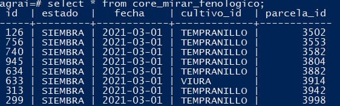

- TFG
1
b'-- LINK_NOTE --\n\n[[resumen]]\n\n[[0-intro]]\n\n[[0-plan]]\n\n[[0-analisis]]\n\n[[0-infraestructura]]\n\n[[0-dise\xc3\xb1o]]\n\n[[0-implementacion]]\n\n[[0-seguimiento]]\n\n[[0-conclusiones]]'
2
b'Pipeline de Datos para una Aplicaci\xc3\xb3n de datos\xc2\xa0Agroalimentarios.\n\nResumen: El trabajo consistir\xc3\xa1 en la reestructuraci\xc3\xb3n de una aplicaci\xc3\xb3n de gesti\xc3\xb3n de datos agroalimentarios con el objetivo de soportar la gesti\xc3\xb3n y el mantenimiento de los datos de diferentes clientes. Estos datos, actualmente, se actualizan e incrementan de forma peri\xc3\xb3dica con un a\xc3\xb1adido de trabajo manual que se puede optimizar mediante t\xc3\xa9cnicas de integraci\xc3\xb3n y despliegue continuo.'
2
b'[[contexto]]\n\n[[previos]]\n\n[[justificaci\xc3\xb3n]]'
3
b'El prop\xc3\xb3sito de este proyecto es mejorar el flujo de trabajo del equipo de "SpectralGeo" mediante la automatizaci\xc3\xb3n del proceso de recogida y procesado de datos agron\xc3\xb3micos que se utilizan en la creaci\xc3\xb3n de modelos de inteligencia artificial.\n\nAGRAI\xc2\xa0es una aplicaci\xc3\xb3n para la gesti\xc3\xb3n de cultivos que permite al agricultor monitorizar el estado de sus parcelas. El estado actual de la aplicaci\xc3\xb3n se centra el despliegue de datos agron\xc3\xb3micos y vegetativos\xc2\xa0georeferenciados\xc2\xa0a trav\xc3\xa9s de en una interfaz web. Los usuarios de la aplicaci\xc3\xb3n, normalmente agricultores o cooperativas, pueden consultar el estado de su parcelario junto con algunas predicciones. El acceso a dicha aplicaci\xc3\xb3n puede darse desde equipo de sobremesa o un dispositivo m\xc3\xb3vil, aunque es este \xc3\xbaltimo lo que parece que se utiliza m\xc3\xa1s. \n\n \n\nActualmente, c\xc3\xb3mo se procesa la informaci\xc3\xb3n que utiliza nuestra aplicaci\xc3\xb3n es un proceso tedioso para el equipo. En este proceso, diferentes miembros trabajan con\xc2\xa0tecnolog\xc3\xadas\xc2\xa0distintas sobre datos duplicados provenientes de fuentes comunes. Aunque se realiza una planificaci\xc3\xb3n y coordinaci\xc3\xb3n de los proyectos, se pierde bastante tiempo en la transformaci\xc3\xb3n de los datos que cada miembro del equipo necesita para llevar a cabo su labor.\n\nEl objetivo de este Trabajo de Fin de Grado (TFG) es mejorar y automatizar el flujo de trabajo del equipo, convirtiendo la aplicaci\xc3\xb3n AGRAI en una herramienta robusta que manipule un \xc3\xbanico repositorio de datos al cual el resto del equipo pueda acceder, utilizar de forma segura y lo m\xc3\xa1s importante, sin duplicar y romper la integridad de estos datos.\n\nEntiendo que es un proyecto ambicioso debido a que no solo es importante el conocimiento t\xc3\xa9cnico, sino que ser\xc3\xa1n necesarios cambios en la forma de trabajo del equipo, adem\xc3\xa1s de la confianza de cada miembro por la nueva forma de trabajo que se desea implementar. '
\n\nActualmente, c\xc3\xb3mo se procesa la informaci\xc3\xb3n que utiliza nuestra aplicaci\xc3\xb3n es un proceso tedioso para el equipo. En este proceso, diferentes miembros trabajan con\xc2\xa0tecnolog\xc3\xadas\xc2\xa0distintas sobre datos duplicados provenientes de fuentes comunes. Aunque se realiza una planificaci\xc3\xb3n y coordinaci\xc3\xb3n de los proyectos, se pierde bastante tiempo en la transformaci\xc3\xb3n de los datos que cada miembro del equipo necesita para llevar a cabo su labor.\n\nEl objetivo de este Trabajo de Fin de Grado (TFG) es mejorar y automatizar el flujo de trabajo del equipo, convirtiendo la aplicaci\xc3\xb3n AGRAI en una herramienta robusta que manipule un \xc3\xbanico repositorio de datos al cual el resto del equipo pueda acceder, utilizar de forma segura y lo m\xc3\xa1s importante, sin duplicar y romper la integridad de estos datos.\n\nEntiendo que es un proyecto ambicioso debido a que no solo es importante el conocimiento t\xc3\xa9cnico, sino que ser\xc3\xa1n necesarios cambios en la forma de trabajo del equipo, adem\xc3\xa1s de la confianza de cada miembro por la nueva forma de trabajo que se desea implementar. '
3
b'\nSpectralGeo se ha especializado en el uso de nuevas tecnolog\xc3\xadas para sectores como el de la agricultura o el reciclaje, centr\xc3\xa1ndose en proyectos con car\xc3\xa1cter reivindicativo por la sostenible medioambiental. La relaci\xc3\xb3n con clientes como Ecoembes o el desarrollo de software para la gesti\xc3\xb3n sostenible de cultivos lo demuestran.\n\nDurante las pr\xc3\xa1cticas realizas en la empresa identifiqu\xc3\xa9 que era totalmente necesario dotar de una arquitectura robusta a la aplicaci\xc3\xb3n sobre la que trabajaba gran parte del equipo. Adem\xc3\xa1s de adaptarme a las tecnolog\xc3\xadas necesarias para la ciencia de datos actual al que todo el mundo se est\xc3\xa1 sumando, comenc\xc3\xa9 con la implementaci\xc3\xb3n de un modelo sobre el que la aplicaci\xc3\xb3n AGRAI pudiese escalarse posteriormente.\n\nLa aplicaci\xc3\xb3n ya est\xc3\xa1 creada, el cliente obtiene los resultados que espera cuando consulta el estado de su parcelario en la interfaz de la aplicaci\xc3\xb3n. Como equipo nos organizamos para que la informaci\xc3\xb3n y los modelos predictivos lleguen al cliente a trav\xc3\xa9s de esta, pero son varios los puntos en los que trabajamos en exceso para finalmente mostrar una "predicci\xc3\xb3n" al cliente. Ser\xc3\xa1n las etapas de extracci\xc3\xb3n, pre-procesado, procesado y modelado las que buscaremos optimizar en el contexto de todo el equipo, debido a que estas etapas se reparten entre sus miembros.\n\n \n\nJustificamos este cambio como parte de una b\xc3\xbasqueda de procesos esbeltos (lean), que consisten en la eliminaci\xc3\xb3n de los "desperdicios", o fuentes de despilfarro de tiempo y trabajo en la elaboraci\xc3\xb3n de productos o servicios. A trav\xc3\xa9s de la soluci\xc3\xb3n que vamos a implantar buscamos la optimizaci\xc3\xb3n continua del proceso y la aceptaci\xc3\xb3n de dicha cultura de optimizaci\xc3\xb3n por el equipo.\n\nLos puntos m\xc3\xa1s importantes de los procesos "lean" son los siguientes:\n\n- identificar los desperdicios y tratar de eliminarlos\n- mejorar la comunicaci\xc3\xb3n interna de la organizaci\xc3\xb3n\n- reducir costes y tiempos de entrega y mejorar la calidad\n\n'
\n\nJustificamos este cambio como parte de una b\xc3\xbasqueda de procesos esbeltos (lean), que consisten en la eliminaci\xc3\xb3n de los "desperdicios", o fuentes de despilfarro de tiempo y trabajo en la elaboraci\xc3\xb3n de productos o servicios. A trav\xc3\xa9s de la soluci\xc3\xb3n que vamos a implantar buscamos la optimizaci\xc3\xb3n continua del proceso y la aceptaci\xc3\xb3n de dicha cultura de optimizaci\xc3\xb3n por el equipo.\n\nLos puntos m\xc3\xa1s importantes de los procesos "lean" son los siguientes:\n\n- identificar los desperdicios y tratar de eliminarlos\n- mejorar la comunicaci\xc3\xb3n interna de la organizaci\xc3\xb3n\n- reducir costes y tiempos de entrega y mejorar la calidad\n\n'
3
b'- partimos de un redise\xc3\xb1o de BD anterior.\n- buscamos automatizar los modelos de producci\xc3\xb3n ()\n- necesitamos una arquitectura limpia.\n\nNecesidad de una reestructuraci\xc3\xb3n para la aplicaci\xc3\xb3n Agrai por su crecimiento para la gesti\xc3\xb3n de grandes vol\xc3\xbamenes de datos agrarios con especial \xc3\xa9nfasis en los \xc3\xadndices vegetativos provenientes del procesamiento de im\xc3\xa1genes satelitales. El estado actual de dicha aplicaci\xc3\xb3n consiste en la representaci\xc3\xb3n del estado de cierto parcelario a trav\xc3\xa9s del an\xc3\xa1lisis de hist\xc3\xb3ricos de datos.\n\n\n\n'
2
b'\n-- LINK_NOTE --\n\n[[alcance]]\n\n[[metodolog\xc3\xada]]\n\n[[EDT]]\n\n[[entregables]]\n\n[[tiempos]]\n\n[[gantt]]\n\n[[rrhh]]\n\n[[comunicaciones]] \n\n[[riegos]]'
3
b'El proyecto planteado inicialmente por la empresa tiene una planificaci\xc3\xb3n de cuatro meses. \n\nA continuaci\xc3\xb3n, se expondr\xc3\xa1n los objetivos generales del proyecto con la intenci\xc3\xb3n de aportar una visi\xc3\xb3n global del trabajo que se pretende realizar. Para evaluar el \xc3\xa9xito de la realizaci\xc3\xb3n de mi TFG se plantear\xc3\xa1 en la fase de an\xc3\xa1lisis de cada iteraci\xc3\xb3n unos requisitos a partir de los cu\xc3\xa1les se podr\xc3\xa1 valorar el desarrollo de mi TFG y la influencia que tendr\xc3\xa1 mi aportaci\xc3\xb3n en el proyecto final.\n\nLos objetivos finales del proyecto son:\n\n- Automatizar el despliegue de la aplicaci\xc3\xb3n mediante infraestructura como c\xc3\xb3digo.\n- Dise\xc3\xb1ar un modelo de datos que permita un r\xc3\xa1pido escalado de dicha aplicaci\xc3\xb3n.\n- Automatizar el proceso de trasformaci\xc3\xb3n de los datos mediante el dise\xc3\xb1o de un pipeline.\n- Obtener un modelo de producci\xc3\xb3n de cultivo para el parcelario (kg)\n- Incluir los resultados en la presentaci\xc3\xb3n de la aplicaci\xc3\xb3n.\n- Realizar un proceso de integraci\xc3\xb3n continua mediante pruebas de test para el pipeline desarrollado'
3
b'En el equipo hacemos uso de SCRUM para la gesti\xc3\xb3n del proyecto. Dicha metodolog\xc3\xada permite un desarrollo en cascada de las diferentes tareas propuestas para la creaci\xc3\xb3n del pipeline.\n\nSe usar\xc3\xa1 un ciclo de vida iterativo e incremental. Dentro de las fases del proyecto (tambi\xc3\xa9n llamadas iteraciones), se repiten de manera intencionada una o m\xc3\xa1s actividades del \nproyecto. Con estas iteraciones el entendimiento del producto por parte del equipo va aumentando. Las fases (iteraciones) desarrollan el producto a trav\xc3\xa9s de una serie de ciclos repetidos, mientras que los incrementos van a\xc3\xb1adiendo sucesivamente funcionalidad al \nproducto. En definitiva, consiste en varios ciclos de vida en cascada. Al final de cada iteraci\xc3\xb3n se entrega una versi\xc3\xb3n mejorada.\n\n \n'
\n'
3
b'Mostramos el desglose de las tareas m\xc3\xa1s importantes para la correcta realizaci\xc3\xb3n del proyecto.\n\nmermaid\ngraph LR;\n\tTFG-->PLANIFICACI\xc3\x93N;\n\tTFG-->AN\xc3\x81LISIS;\n\tTFG-->DISE\xc3\x91O;\n\tTFG-->IMPLEMENTACI\xc3\x93N;\n PLANIFICACI\xc3\x93N-->ALCANCE;\n PLANIFICACI\xc3\x93N-->METODOLOGIA;\n PLANIFICACI\xc3\x93N-->EDT;\n PLANIFICACI\xc3\x93N-->ENTREGABLES;\n PLANIFICACI\xc3\x93N-->TIEMPOS;\n PLANIFICACI\xc3\x93N-->GANTT;\n PLANIFICACI\xc3\x93N-->RRHH;\n PLANIFICACI\xc3\x93N-->COMUNICACIONES;\n PLANIFICACI\xc3\x93N-->RIESGOS;\n AN\xc3\x81LISIS-->PREVIOS;\n AN\xc3\x81LISIS-->REQUISITOS;\n REQUISITOS-->FUNCIONALES:\n REQUISITOS-->NO_FUNCIONALES;\n DISE\xc3\x91O-->ARQUITECTURA;\n IMPLEMENTACI\xc3\x93N-->PIPELINE;\n PIPELINE-->PIPE.1_D;\n PIPELINE-->PIPE.2_D;\n\n\n## Tareas y Descripci\xc3\xb3n:\n\nTarea | Descripci\xc3\xb3n\n------------ | ------------\n1.1 INTRODUCCI\xc3\x93N | Explicamos el contexto del problema planteado y c\xc3\xb3mo vamos a implementar la soluci\xc3\xb3n.\n1.2 ALCANCE | Qu\xc3\xa9 pretendemos conseguir con el proyecto acontando las tareas\n1.3 RECURSOS HUMANOS | Aquellas personas que intervienen y la explicaci\xc3\xb3n de sus funciones\n1.4 COMUNICACIONES | Elementos de comunicaci\xc3\xb3n interna y externa, incluimos interesados y clientes.\n1.5 METODOLOGIA | Conjunto de procedimientos que usaremos para la planificaci\xc3\xb3n y gesti\xc3\xb3n.\n1.6 EDT | Estructura en \xc3\xa1rbol con el desglose en tareas del trabajo\n1.7 ENTREGABLES | Creaci\xc3\xb3n de los paquetes de trabajo del proyecto\n1.8 ESTIMACI\xc3\x93N DE TIEMPOS | Estimanci\xc3\xb3n en horas para cada paquete de trabajo\n1.9 GANTT | Tiempo determinado en el calendario para cada uno de los paquetes de trabajo\n1.10 PLAN DE RIESGOS | Determinaremos los principales riesgos que pueden suceder durante el proyecto y los categorizaremos por nivel de impacto y de suceso.\n\nTarea | Descripci\xc3\xb3n\n------------ | ------------\n2.1 CONCEPTOS PREVIOS | Explicamos el contexto del problema planteado y c\xc3\xb3mo vamos a implementar la soluci\xc3\xb3n.\n2.2 PROYECTO AGRAI | Presentamos el estado actual de la aplicaci\xc3\xb3n AGRAI.\n2.3 PIPELINE | Exponemos los distintos pasos a trav\xc3\xa9s de los cuales se transforman los datos\n2.4 CAT\xc3\x81LOGO DE REQUISITOS | Obtendremos los requisitos funcionales y no funcionales del proyecto\n\nTarea | Descripci\xc3\xb3n\n------------ | ------------\n3.1 ENTORNO | Decidimos los entornos de desarrollo necesarios as\xc3\xad como las tecnolog\xc3\xadas necesarias en cada punto.\n3.2 INFRAESTRUCTURA C\xc3\x93DIGO | Desarrollamos un script para dejar la m\xc3\xa1quina que contiene la aplicaci\xc3\xb3n en un estado estable con todas sus dependencias instaladas.\n\nTarea | Descripci\xc3\xb3n\n------------ | ------------\n4.1 AN\xc3\x81LISIS MODELO PREVIO | Explicamos el contexto del modelo de datos previos y sus fallos\n4.2 REDISE\xc3\x91O ENTIDADES | Explicamos qu\xc3\xa9 entidades conformar\xc3\xa1n el modelo y por que la base de datos quedar\xc3\xa1 normalizada.\n4.3 DISE\xc3\x91O DE SERVICIOS | Encapsulamos las consultas m\xc3\xa1s frecuentes en servicios f\xc3\xa1ciles de acceder.\n4.4 CARGA CON DATOS | Cargaremos el modelo con datos para verificar su consistencia.\n4.5 DESPLIEGUE DE APLICACI\xc3\x93N | Obtendremos los requisitos funcionales y no funcionales del proyecto\n\nTarea | Descripci\xc3\xb3n\n------------ | ------------\n5.1 DATOS DE ENTRADA | Explicamos las fuentes de datos con las que trabajamos\n5.2 DEFINICI\xc3\x93N DE ETAPAS | Acotamos y definimos los pasos en los que se transforman los datos hasta llegar al modelo de forma consistente.\n5.3 VISTA MINABLE | Con los datos ordenados en el modelo seleccionamos \'features\' para el modelo de producci\xc3\xb3n\n5.4 MODELO DE PRODUCCI\xc3\x93N | Usamos varias t\xc3\xa9cnicas de Inteligencia Artificial para crear un modelo de producci\xc3\xb3n de Kg para el cultivo.\n5.4 AUTOMATIZACI\xc3\x93N COMPLETA | Explicamos c\xc3\xb3mo esta definici\xc3\xb3n e implementaci\xc3\xb3n de etapas permite automatizar el flujo de trabajo del equipo.\n\nTarea | Descripci\xc3\xb3n\n------------ | ------------\n6.1 PRUEBAS | Realizamos pruebas de integraci\xc3\xb3n para asegurar la consistencia de los datos\n\nTarea | Descripci\xc3\xb3n\n------------ | ------------\n7.1 ESTUDIO PREVIO | Se revisar\xc3\xa1n y observar\xc3\xa1n TFGs de a\xc3\xb1os anteriores, los cuales podemos encontrar en la biblioteca de la Universidad de La Rioja.\n7.2 ESTRUCTURA | Dise\xc3\xb1aremos la estructura de nuestro TFG bas\xc3\xa1ndonos en la estructura de otros trabajos de compa\xc3\xb1eros. \n7.3 REDACCI\xc3\x93N | Redactamos la memoria a medida que avanza el proyecto.\n7.4 EXPORTACI\xc3\x93N | La memoria se escribe en notas de "markdown" debido a la simplicidad con la que se pueden integrar diagramas y c\xc3\xb3digo. Al terminarl, exportaremos la memoria como p\xc3\xa1ginal "html"\n7.5 REVISI\xc3\x93N | Al finalizar el proyecto revisaremos el escrito para asegurarnos de no cometer errores.\n\nTarea | Descripci\xc3\xb3n\n------------ | ------------\n8.1 GESTI\xc3\x93N DE TIEMPOS | En una tabla registramos el tiempo estimado, el tiempo real invertido y la desviaci\xc3\xb3n del tiempo en cada una de las tareas del proyecto.\n8.2 REUNIONES | Se realizar\xc3\xa1n \xc3\xb3rdenes del d\xc3\xada y actas con lo tratado en cada una de las reuniones.\n\n'
3
b"Para acotar el proceso de trabajo identificamos los siguientes entregables que generaremos a lo a medida que avance el proyecto. Estos entregables quedar\xc3\xa1n en la memoria en sus correspondientes apartados o como anexos si tienen una extensi\xc3\xb3n m\xc3\xa1s larga. La siguiente tabla contiene que lleva a cada uno de estos artefactos.\n\nIDENT | ENTREGABLE | DESCRIPCI\xc3\x93N\n:----------------|-------------:|:-------------:\nE01 | M\xc3\xb3dulo de Inicio | An\xc3\xa1lisis de viabilidad que permitir\xc3\xa1 determinar si es posible desarrollar el proyecto.\n[E02] | Planificaci\xc3\xb3n del proyecto | Determinaremos los requisitos del proyecto, crearemos un enunciado para el alcance, realizaremos una descripci\xc3\xb3n detallada de tareas junto a una EDT, estimaremos el tiempo y costo de los paquetes de trabajo, desarrollaremos un cronograma, estableceremos los est\xc3\xa1ndares, procesos y m\xc3\xa9tricas de calidad, determinaremos un plan de identificaci\xc3\xb3n de riesgos y crearemos el plan de gesti\xc3\xb3n de cambios.\nE03 | Infraestructura como c\xc3\xb3digo | Desarrollo de un 'script' con las instrucciones bash para dejar la m\xc3\xa1quina que despliega la aplicaci\xc3\xb3n en un estado estable. \n[E04] | Documento de Dise\xc3\xb1o | Documento en el que se explican las decisiones tomadas para la creaci\xc3\xb3n de las entidades del modelo y sus relaciones. \nE05 | Esquema modelo de Datos | Esquema UML que representa las entidades del modelo y sus relaciones. Modelo simplificado de datos exraido del ORM Django \n[E06] | Arquitectura Pipeline | Arquitectura y diagramas del proceso de transformaci\xc3\xb3n de datos, junto con sus scripts.\n[E07] | Vista minable | Estructura tabulada con las 'features' necesarias para el modelo de producci\xc3\xb3n de cultivo.\n[E08] | Modelo de producci\xc3\xb3n | Cuaderno jupyter en el que buscamos el mejor modelo posible\n[E09] | Interfaz de usuario |Entregable donde crearemos un apartado en la aplicaci\xc3\xb3n web AGRAI para mostrar las predicciones del modelo creado.\n"
3
b"\nPara poder realizar un posterior seguimiento y control del proyecto asignamos a cada tarea un tiempo adecuado a la complejidad que estimamos para \xc3\xa9sta. En caso de que posteriormente nos alejemos de lo que aqu\xc3\xad planificamos, anotaremos dichas desviaciones en la secci\xc3\xb3n de 'seguimiento y control'\n\n\nV |Tarea | Horas\n------------ | ------------ | ------------\n1.0 |DOP | 10\n1.1 |INTRODUCCI\xc3\x93N | 1\n1.2 |ALCANCE | 1\n1.3 | RECURSOS HUMANOS | 1\n1.4 | COMUNICACIONES | 1\n1.5 | METODOLOGIA | 1\n1.6 | EDT | 1\n1.7 | ENTREGABLES | 1\n1.8 | ESTIMACI\xc3\x93N DE TIEMPOS | 1\n1.9 | GANTT | 1\n1.10 | PLAN DE RIESGOS |1\n2.0 |AN\xc3\x81LISIS | 10\n2.1 |CONCEPTOS PREVIOS | 1\n2.2 |PROYECTO AGRAI | 1\n2.3 |PIPELINE | 1\n2.4 |CAT\xc3\x81LOGO DE REQUISITOS | 1\n3.0 |DISE\xc3\x910 | 10\n3.1 |AN\xc3\x81LISIS MODELO PREVIO | 1\n3.2 | REDISE\xc3\x91O ENTIDADES | 1\n3.3 | CARGA CON DATOS | 1\n3.4 |DESPLIEGUE DE APLICACI\xc3\x93N | 1\n3.4 | PIPELINE | 1\n4.0 | IMPLEMENTACI\xc3\x93N | 10\n4.1 | DATOS DE ENTRADA | 1\n4.2 | DEFINICI\xc3\x93N DE ETAPAS | 1\n4.3 | VISTA MINABLE | 1\n4.4 | MODELO DE PRODUCCI\xc3\x93N | 1\n4.4 | AUTOMATIZACI\xc3\x93N COMPLETA | 1\n5.0 | PRUEBAS | 10\n5.1 | PRUEBAS | 1\n6.0 | MEMORIA | 10\n6.1 | ESTUDIO PREVIO | 1\n6.2 | ESTRUCTURA | 1\n6.3 | REDACCI\xc3\x93N | 1\n6.4 | REVISI\xc3\x93N | 1\n7.0 | SEGUIMIENTO Y CONTROL | 10\n7.1 | GESTI\xc3\x93N DE TIEMPOS | 1\n7.2 | REUNIONES | 1\n"
3
b'\nhttps://gist.github.com/martinwoodward/8ad6296118c975510766d80310db71fd\n\nEl siguiente diagrama propone un desglose de tareas para la planificaci\xc3\xb3n del proyecto. \n\n\nmermaid\ngantt\n title Planificaci\xc3\xb3n\n dateFormat DD-MM\n axisFormat %d\n \n\tsection ANALISIS\n ALCANCE: done, 01-01, 2d\n METODOLOGIA: crit, 02-01, 3d\n\tEDT: 03-01, 5d\n\tGANNT: 04-01, 5d\n RRHH: 05-01, 3d\n COMUNICACIONES: 06-01, 5d\n\tRIESGOS: 07-01, 5d\n \n\tsection MODELO_DATOS\n RELACIONES BD: done, 08-01, 15d\n REDISE\xc3\x91O: crit, 09-01, 15d\n\t \n\tsection ENTORNO\n DJANGO+JUPYTER: done, 10-01, 2d\n INT_CONTINUA: crit, 11-01, 3d\n \n section PIPELINE\n INFR: 20-01, 5d\n LOAD: 21-01, 5d\n FEAT: 25-01, 5d\n\tVIEW: 25-01, 7d\n MODEL: 30-01, 7d\n WEB: 30-01, 5d\n Phase 2 complete: milestone, 30-01, 0d\n \n section TEST\n TEST 1: 20-01, 30d\n TEST 2: 30-01, 20d\n TEST 3: milestone, 20-02, 1d\n\n\tsection MEMORIA\n\tMEM_WRITE: 01-01, 60d\n SEG_Y_CONT: 01-01, 60d\n\t\n\n Project complete: milestone, 10-03, 0d\n\n\nEste diagrama es una estipulaci\xc3\xb3n de c\xc3\xb3mo creo que voy a ir durante el desarrollo del modelo de datos y del pipeline correspondiente. En la secci\xc3\xb3n final de seguimiento y control analizamos las desviaciones encontradas y c\xc3\xb3mo han sido solucionados estos contratiempos.\n\n\n\n\n\n'
3
b'El personal implicado en el Trabajo de Fin de Grado ser\xc3\xa1: \n\nINTERESADO | LABOR \n:----------------|:-------------:\nAlberto Esteban Larreina | Ejecutor y responsable del proyecto. Desarrollar\xc3\xa1 el proyecto en su totalidad\nAntonio R\xc3\xbabio | Tutor en la empresa. Se dedicar\xc3\xa1 a corregir los aspectos t\xc3\xa9cnicos del proyecto referentes al desarrollo del mismo y planificaci\xc3\xb3n.\nJ\xc3\xb3nathan Heras | Tutor acad\xc3\xa9mico. Se dedicar\xc3\xa1 a corregir aspectos referentes a la documentaci\xc3\xb3n y la forma en la que se desarrollar\xc3\xa1 el proyecto a lo largo del tiempo estipulado y me guiar\xc3\xa1 a cerca del desarrollo de este.'
3
b'\nPara mantener informados tanto al tutor acad\xc3\xa9mico como a la tutora de la empresa, utilizaremos los siguientes canales: \n\nCANAL | DESCRIPCI\xc3\x93N\n:----------------|-------------:\nReuniones | presenciales, tanto con el tutor acad\xc3\xa9mico como con el tutor de la empresa. \nEmail | se utilizar\xc3\xa1 como forma de comunicaci\xc3\xb3n electr\xc3\xb3nica para concretar determinadas pautas o establecimiento de citas. \nDiscord | aplicaci\xc3\xb3n de comunicaci\xc3\xb3n interna para mensajes directos con los miembros del equipo.\n'
3
b"El objetivo de esta tabla es aumentar la probabilidad de eventos positivos y disminuir la de los negativos.\n\nFUENTE | RIESGO | SI SUCEDE | MINIMIZAR\n:----------------|:-------------:|:-------------:|:-------------:\nAusencia de interesados | M\xc3\xa9dio |this is centered |this is centered\nAusencia del Tutor | these will be justified |this is centered |\nTecnolog\xc3\xada equivocada | Medio |Estudiar nuevas posiblidades | Uso de patrones abstractos elegantes que se puedan implementar en diferentes frameworks\nP\xc3\xa9rdida c\xc3\xb3digo fuente | Alto |Empezar casi de cero |Backups y control de versiones\nP\xc3\xa9rdida documentaci\xc3\xb3n| Alto |Empezar casi de cero | Utilizar herramientas de copias incrementales\nFallo del servidor con la applicaci\xc3\xb3n| Alto | Utilizar y configurar uno nuevo |Backups\nFalta de horas para terminar el proyecto| Medio | Dedicarse primero a los requisitos m\xc3\xa1s importantes. | Realizar una buena planificaci\xc3\xb3n y ajustar el alcance\n\nDe la tabla anterior se prestar\xc3\xa1 especial atenci\xc3\xb3n a los riesgos valorados como 'Alto', ya que por su incidencia en el proyecto requieren un seguimiento exhaustivo, para los cuales se desarrollar\xc3\xa1n sus correspondientes planes de contingencia. \n\nLos riesgos de valoraci\xc3\xb3n Media y Baja tendr\xc3\xa1n un control basado en su plan de mitigaci\xc3\xb3n simple de seguimientos al cronograma, con intervalos cortos de tiempo.\n\n\n"
2
b'\n-- LINK_NOTE --\n\n[[AGRAI-data]]\n\n[[ideas-previas]]\n\n[[automatizacion]]\n\n[[tecnolog\xc3\xadas]]\n\n[[requisitos]]'
3
b'AGRAI\xc2\xa0es una aplicaci\xc3\xb3n para la gesti\xc3\xb3n de cultivo que permite al agricultor monitorizar el estado de sus parcelas. El estado actual de la aplicaci\xc3\xb3n se centra el despliegue de datos\xc2\xa0geo-referenciados\xc2\xa0por medio de una interfaz web. Los resultados para el usuario de la aplicaci\xc3\xb3n son satisfactorios permitiendo a \xc3\xa9ste consultar el estado de su parcelario junto con algunas predicciones en cualquier momento. \n\nEn la interfaz web el cliente observa un mapa con sus parcelas resaltadas en colores. Este color reflejado en los p\xc3\xadxeles hace referencia a los \xc3\xadndices vegetativos provenientes de las im\xc3\xa1genes satelitales. Los clientes utilizan dicha interfaz para ver el estado de sus cultivos y observar la producci\xc3\xb3n que predicen los modelos de Inteligencia Artificial generados.\n\n \n\nA nivel interno, el equipo trabaja con datos provenientes de im\xc3\xa1genes descargadas de sat\xc3\xa9lites como SENTINEL, o de grabaciones realizadas por dron cuando se requiere una mayor calidad. Estos datos se mezclan con informaci\xc3\xb3n proporcionada por estaciones meteorol\xc3\xb3gicas como el SIAR y con la informaci\xc3\xb3n que los clientes pueden proporcionar sobre campa\xc3\xb1as anteriores.\n\nPor otro lado, c\xc3\xb3mo actualmente se procesa la informaci\xc3\xb3n es un proceso tedioso para el equipo. Los diferentes miembros trabajan con\xc2\xa0tecnolog\xc3\xadas\xc2\xa0distintas sobre datos muchas veces duplicados que provienen de fuentes comunes.\n\nEl objetivo de este trabajo de fin de grado es mejorar y automatizar el flujo de trabajo del equipo convirtiendo la aplicaci\xc3\xb3n AGRAI en una herramienta robusta que manipule un \xc3\xbanico repositorio de datos al cu\xc3\xa1l el resto del equipo pueda acceder y utilizar de forma segura y lo m\xc3\xa1s importante, sin duplicar y romper la integridad de los datos.\n\nEntiendo que es un proyecto ambicioso debido a que no s\xc3\xb3lo es importante el conocimiento t\xc3\xa9cnico sino que ser\xc3\xa1n necesarios cambios en la forma de trabajo del equipo adem\xc3\xa1s de la confianza de cada miembro por la nueva forma de trabajo que se desea implementar. Intentaremos seguir los principios de los procesos \'lean\' para buscar la mejor optimizaci\xc3\xb3n continua.\n\n
\n\nA nivel interno, el equipo trabaja con datos provenientes de im\xc3\xa1genes descargadas de sat\xc3\xa9lites como SENTINEL, o de grabaciones realizadas por dron cuando se requiere una mayor calidad. Estos datos se mezclan con informaci\xc3\xb3n proporcionada por estaciones meteorol\xc3\xb3gicas como el SIAR y con la informaci\xc3\xb3n que los clientes pueden proporcionar sobre campa\xc3\xb1as anteriores.\n\nPor otro lado, c\xc3\xb3mo actualmente se procesa la informaci\xc3\xb3n es un proceso tedioso para el equipo. Los diferentes miembros trabajan con\xc2\xa0tecnolog\xc3\xadas\xc2\xa0distintas sobre datos muchas veces duplicados que provienen de fuentes comunes.\n\nEl objetivo de este trabajo de fin de grado es mejorar y automatizar el flujo de trabajo del equipo convirtiendo la aplicaci\xc3\xb3n AGRAI en una herramienta robusta que manipule un \xc3\xbanico repositorio de datos al cu\xc3\xa1l el resto del equipo pueda acceder y utilizar de forma segura y lo m\xc3\xa1s importante, sin duplicar y romper la integridad de los datos.\n\nEntiendo que es un proyecto ambicioso debido a que no s\xc3\xb3lo es importante el conocimiento t\xc3\xa9cnico sino que ser\xc3\xa1n necesarios cambios en la forma de trabajo del equipo adem\xc3\xa1s de la confianza de cada miembro por la nueva forma de trabajo que se desea implementar. Intentaremos seguir los principios de los procesos \'lean\' para buscar la mejor optimizaci\xc3\xb3n continua.\n\n \n\n\n\n\n'
\n\n\n\n\n'
3
b'Mencion\xc3\xa1bamos la b\xc3\xbasqueda de optimizaci\xc3\xb3n del proceso como una de las principales idea para mejorar el flujo de datos que utiliza la aplicaci\xc3\xb3n. El redise\xc3\xb1o que se quiere implantar y la arquitectura resultante tiene que cumplir con los principios de dicha metodolog\xc3\xada. Para que este trabaja resulte satisfactorio, el software tiene que poder utilizarse por el equipo con agilidad, consiguiendo que quede como una herramienta f\xc3\xadsica que coordine el esquema mental de los participantes que la usan.\n\nPara poder realizar este proyecto decidimos trabajar con un n\xc3\xbamero peque\xc3\xb1o representativo de datos de la\xc2\xa0aplicaci\xc3\xb3n\xc2\xa0actualmente en producci\xc3\xb3n. Un menor volumen de informaci\xc3\xb3n permite realizar pruebas y da pie a fijarnos en las relaciones y los esquemas estructurales con m\xc3\xa1s precisi\xc3\xb3n. \n \nComo este trabajo se realiza en equipo, a medida que voy haciendo pruebas con mi entorno local, un compa\xc3\xb1ero se encarga de ir probando mi entorno con los\xc2\xa0vol\xc3\xbamenes\xc2\xa0originales de datos que la aplicaci\xc3\xb3n utiliza en producci\xc3\xb3n. La\xc2\xa0reestructuraci\xc3\xb3n\xc2\xa0del modelo de\xc2\xa0BD\xc2\xa0que realizamos contempla un posterior escalado de la aplicaci\xc3\xb3n que permitir\xc3\xa1 la integraci\xc3\xb3n continua con m\xc3\xa1s datos y nuevas tecnolog\xc3\xadas.\n\nLa siguiente tabla muestra las principales fuentes de datos de las que se obtienen y enlaza la informaci\xc3\xb3n. El volumen de datos que se puede llegar a manejar es grande, por cada parcela se persisten varios \xc3\xadndices vegetativos en cada uno de sus p\xc3\xadxeles. \n\nFUENTE DATOS | DESCRIPCI\xc3\x93N\n:----------------|:-------------\nQGIS | informaci\xc3\xb3n geomom\xc3\xa9trica de parcelas y sus pix\xc3\xa9les\n\xc3\x8dndices Vegetativos | provenientes de im\xc3\xa1genes satelitales descargadas en diferentes fechas\nCultivos / Variedad | informaci\xc3\xb3n tabulada en excels sobre tipo de cultivos y sus variedades\nRF3 | documentar el proceso de desarrollo generando los documentos de dise\xc3\xb1o pertinente\n\nPara poder realizar el trabajo utilizaremos una muestra representativa de los datos debido a que el proceso de descarga de \xc3\xadndices y persistencia de datos es largo para realizar las pruebas. El sistema est\xc3\xa1 pensado para trabajar con muchas parcelas, en las pruebas que yo voy a realizar escogemos una muestra de 25 parcelas y pensaremos una descarga de \xc3\xadndices para no m\xc3\xa1s de 4 fechas diferentes.\n\nEs el hist\xc3\xb3rico de \xc3\xadndices en diferentes fechas lo que permite al sistema realizar modelos predictivos. A mayor volumen de datos, m\xc3\xa1s precisi\xc3\xb3n podremos obtener en los modelos posteriormente. El punto importante de este trabajo es la mejora del proceso y la automatizaci\xc3\xb3n del flujo de datos, por ello no ser\xc3\xa1 relevante que los modelos predictivos que creemos al final no tengan buena precisi\xc3\xb3n. \n\nPara hacernos una idea, contemplando solo 25 parcelas, podemos almacenar 3000 p\xc3\xadxeles. Por cada pixel vamos a registrar varios \xc3\xadndices vegetativos (ndvi, ndre) y para generar el hist\xc3\xb3rico de datos esta informaci\xc3\xb3n se multiplica por el n\xc3\xbamero de fechas contempladas. Es decir, que aunque trabajamos sobre un volumen reducido para probar la automatizaci\xc3\xb3n, siguen siendo mucha informaci\xc3\xb3n que tiene que persistirse en la base de datos.'
3
b'\nEl proceso que vamos a implantar requiere de un dise\xc3\xb1o que posibilite estructurar y manejar grandes vol\xc3\xbamenes de datos. Actualmente existen varias tecnolog\xc3\xadas que abordan el concepto de Pipeline desde un punto de vista global. No vamos a utilizar ninguna de estas tecnolog\xc3\xadas, ETL, nuestro proceso se se va ha desarrollar a medida, utilizando un Pipeline como una parte de la arquitectura, encargada de la transformaci\xc3\xb3n de los datos hasta su almacenamiento en el modelo.\n\nEste proceso de dise\xc3\xb1o va a ser casi manual.'
3
b'El c\xc3\xb3digo de la aplicaci\xc3\xb3n que heredamos est\xc3\xa1 escrito en Python. El lenguaje es una decisi\xc3\xb3n adecuada debido a la necesidad de integrar t\xc3\xa9cnicas de procesamiento de datos e inteligencia artificial. El framework de Django para Python permite construir un proyecto robusto y despegarlo en un servidor con una interfaz web.\n\nDjango nos ofrece las herramientas necesarias para trabajar desde un alto nivel de abstracci\xc3\xb3n y poder dise\xc3\xb1ar una aplicaci\xc3\xb3n s\xc3\xb3lida y estable. Algunas de estas herramientas son:\n\n- ORM, Object-Relational-Mapping: permite crear un modelo de datos y gestiona autom\xc3\xa1ticamente la BD (base de datos), subyacente. Abstrae las consultas SQL y evita tener que realizar migraciones manuales de los esquemas.\n- Static File Generator: podemos dise\xc3\xb1ar la interfaz de la aplicaci\xc3\xb3n en formato web y desplegar en un servidor.\n- Commands-System: gesti\xc3\xb3n de comandos internos mediante los que se pueden automatizar tareas, utilizaremos esta arquitectura para dise\xc3\xb1ar el pipeline de datos y persistir la informaci\xc3\xb3n proveniente de diferentes fuentes.\n\nAunque el framework es muy potente, har\xc3\xa1n falta otras herramientas y entornos para completar con \xc3\xa9xito la automatizaci\xc3\xb3n que buscamos y as\xc3\xad conseguir un proceso de optimizaci\xc3\xb3n continua. En el siguiente punto hablaremos de la infraestructura que la aplicaci\xc3\xb3n requiere y de c\xc3\xb3mo podemos solventar algunos de los problemas de integraci\xc3\xb3n m\xc3\xa1s importantes.\n\n \n\nLa utilizaci\xc3\xb3n de Python, aparte de incluir este framework, nos da la posibilidad de utilizar las librer\xc3\xadas de inteligencia artificial y ciencia de datos que finalmente utilizaremos para la creaci\xc3\xb3n del modelo de cultivo. Algunas de librer\xc3\xadas principales que vamos a utilizar son las siguientes:\n\nLIBRER\xc3\x8dA | DESCRIPCI\xc3\x93N\n:----------------|:-------------\nscikit-learn | creaci\xc3\xb3n de modelos de inteligencia artificial\nnumpy | tratamiento de datos multidimensionales\npandas | uso de datos tabulados con herramientas para su procesamiento\n\n\n'
\n\nLa utilizaci\xc3\xb3n de Python, aparte de incluir este framework, nos da la posibilidad de utilizar las librer\xc3\xadas de inteligencia artificial y ciencia de datos que finalmente utilizaremos para la creaci\xc3\xb3n del modelo de cultivo. Algunas de librer\xc3\xadas principales que vamos a utilizar son las siguientes:\n\nLIBRER\xc3\x8dA | DESCRIPCI\xc3\x93N\n:----------------|:-------------\nscikit-learn | creaci\xc3\xb3n de modelos de inteligencia artificial\nnumpy | tratamiento de datos multidimensionales\npandas | uso de datos tabulados con herramientas para su procesamiento\n\n\n'
3
b'La siguiente tabla muestra los requisitos funcionales cr\xc3\xadticos para completar con \xc3\xa9xito el proyecto, terminando el trabajo con un producto estable que el equipo pueda utilizar.\n\nREQUISITO | DESCRIPCI\xc3\x93N\n:----------------|:-------------\nRF1 | automatizar el despliegue de la aplicaci\xc3\xb3n identificando las librer\xc3\xadas y dependencias necesarias\nRF2 | redise\xc3\xb1ar el modelo de datos para poder escalar la aplicaci\xc3\xb3n y su gesti\xc3\xb3n de datos.\nRF3 | documentar el proceso de desarrollo generando los documentos de dise\xc3\xb1o pertinentes.\nRF4 | creaci\xc3\xb3n de un entorno com\xc3\xban que permita trabajar al equipo sobre las mismos fuentes de datos.\nRF5 | obtenci\xc3\xb3n de una vista minable con la selecci\xc3\xb3n de features provenientes del modelo.\nRF6 | creaci\xc3\xb3n de un modelo de producci\xc3\xb3n probando varios algoritmos de inteligencia artificial.\nRF7 | despliegue de los datos del modelo en la interfaz de la aplicaci\xc3\xb3n.\n\nComo requisitos no funcionales para la aplicaci\xc3\xb3n identificamos los siguientes, entendiendo que se completar\xc3\xa1n a lo largo de todo el proyecto.\n\nREQUISITO | DESCRIPCI\xc3\x93N\n:----------------|:-------------\nRNF1 | Crear un entorno Linux local con la misma configuraci\xc3\xb3n necesaria en producci\xc3\xb3n.\nRNF2 | Preparar las fuentes de datos con una muestra peque\xc3\xb1a representativa de la aplicaci\xc3\xb3n en producci\xc3\xb3n.\nRNF3 | Estudiar las posibles features para la vista minable que utilizar\xc3\xa1 el modelo de producci\xc3\xb3n de cultivo\nRNF4 | Implantar un flujo de trabajo en el equipo para utilizar las mismas fuentes de datos\nRNF5 | Utilizar software libre\n\n\n'
2
b'-- LINK_NOTE --\n\n[[infraestructure]]\n\n[[entorno]]\n\n[[UNIX]]\n\n[[control-versiones]]'
3
b'\nEl entorno local sobre el cu\xc3\xa1l desarrollamos y el de producci\xc3\xb3n donde se despliega la aplicaci\xc3\xb3n son actualmente diferentes. Todos los miembros del equipo utilizamos m\xc3\xa1quinas Windows, mientras que el servidor de producci\xc3\xb3n es una m\xc3\xa1quina Ubuntu. Es un problema importante por el proceso de instalaci\xc3\xb3n de las librer\xc3\xadas necesarias para trabajar con los datos, se pierde gran cantidad de tiempo en preparar el entorno de cada persona que va ha trabajar con el repositorio de la aplicaci\xc3\xb3n. Como soluci\xc3\xb3n propondremos una nueva forma de trabajo que nos asegure un entorno com\xc3\xban con las mismas librer\xc3\xadas y paquetes.\n\nmermaid\ngraph LR; \n\tsubgraph desarollo\n\t\tWSL--> WSL.1\n\t\tWSL--> WSL.2\n\t\tWSL--> WSL.3\n\tend\n\t\n\tsubgraph producci\xc3\xb3n\n\n\t\tWSL.1--> Ubuntu\n\t\tWSL.2--> Ubuntu\n\t\tWSL.3--> Ubuntu\n\t\t\n\tend\n\t\n\n\t\tBD_test-->WSL\n\t\tBD_prod-->Ubuntu\n\n\t\n\tsubgraph repositorio\n\t\tCODE --> GIT\t\n\t\tGIT --> WSL\n\t\tGIT --> Ubuntu\n\tend\n\n\nParte del trabajo consiste en la automatizaci\xc3\xb3n del despliegue de la aplicaci\xc3\xb3n. En este punto vemos como la infraestructura como c\xc3\xb3digo permite aislar las librer\xc3\xadas necesarias creando un script que deja una m\xc3\xa1quina en estado estable para ejecutar la aplicaci\xc3\xb3n.\n\nPara poder utilizar tecnolog\xc3\xadas que posibiliten la integraci\xc3\xb3n continua transformamos el entorno de desarrollo desplegando la aplicaci\xc3\xb3n en UNIX. Identificamos las siguientes dependencias que necesitan ser instaladas:\n\n- postgres 14 + postgis\n- python3.10\n- GDAL 3.3.2\n- Django\n- Virtual-Env [librer\xc3\xadas ciencia de datos]\n\nSuele ser complicado encontrar todas las dependencias cons sus versiones correctas, en este caso el punto m\xc3\xa1s complicado ha sido la instalaci\xc3\xb3n de Python con su versi\xc3\xb3n correspondiente de GDAL, librer\xc3\xada que permite tratar con los datos geoespaciales. Adem\xc3\xa1s el sistema gestor de BD, \'postgres\' necesita una extensi\xc3\xb3n especial, \'postgis\' para poder guardar los datos georeferenciados. Como este tipo de trabajo es casi de prueba y error, la utilidad del script que obtenemos es de gran valor.\n\nEl primero de los entregables hace referencia a esta parte del proceso. El siguiente script automatiza la creaci\xc3\xb3n de una m\xc3\xa1quina con las librer\xc3\xadas necesarias, el cu\xc3\xa1l una vez ejecutado, deja la aplicaci\xc3\xb3n lista para su desligue.\n\nbash\n\n#!/bin/bash\n\ncurl -fsSL https://www.postgresql.org/media/keys/ACCC4CF8.asc|sudo gpg --dearmor -o /etc/apt/trusted.gpg.d/postgresql.gpg\n\nsudo sh -c \'echo "deb http://apt.postgresql.org/pub/repos/apt $(lsb_release -cs)-pgdg main" > /etc/apt/sources.list.d/pgdg.list\'\n\nsudo apt update\nsudo apt upgrade\n\nsudo apt install postgresql-14\nsudo apt install postgresql-14-postgis-scripts\n\nsudo service postgresql start\n\nsudo -u postgres createuser -P agrai_user\nsudo -u postgres createdb -O agrai_user agrai_db\nsudo -u postgres psql -c "CREATE EXTENSION postgis; CREATE EXTENSION postgis_topology;" agrai_db\n\n# gdal native:\nsudo add-apt-repository ppa:ubuntugis/ppa && sudo apt-get update\nsudo apt-get update\n \n# cargarte la versi\xc3\xb3n de la m\xc3\xa1quina, dejar solo 1:\nsudo apt autoremove python3\n\n# python repositories\n\nsudo apt install software-properties-common -y\nsudo add-apt-repository ppa:deadsnakes/ppa\n\n# python concrete installation\n\nsudo apt install python3.10 # version concreta\nsudo apt-get install python3.10-dev python3.10-venv\nsudo apt install python3.10-dev python3.10-venv\nsudo apt install virtualenv\n\n# python env var\n\nexport PYTHONPATH="/usr/local/bin/python3.10:/usr/local/lib/python3.10/lib-dynload:/usr/local/lib/python3.10/site-packages"\n\nalias py=python3.10\nalias python=python3.10\nalias python3=python3.10\n\n# creacion entorno_venv\nsudo python3.10 -m venv ../agrai_venv\n\n# GDAL\nsudo apt-get install libgdal-dev\n\n# env gdal lib variables\n\nexport CPLUS_INCLUDE_PATH=/usr/include/gdal\nexport C_INCLUDE_PATH=/usr/include/gdal\n\n# install dep in python agrai_venv\n\nsource ../agrai_venv/bin/activate\n# pip install --upgrade pip # quitar\nsudo python3 -m pip install -r requirements.txt\n\n\npython \n\npsycopg2-binary\ndjango\ndjango-apscheduler\ndjango_extensions\npsycopg2\nnumpy\npandas\nrequests\npdfkit\nfiona\nrasterio\nrasterstats\nGDAL==3.4.3\npsycopg2-binary\nxhtml2pdf\n\n'
3
b'Es importante preparar un entorno com\xc3\xban para el equipo. Django es un framework muy \xc3\xbatil por la integraci\xc3\xb3n de las herramientas que hemos visto (ORM, web-interfaces, etc.), pero para conseguir un workflow adecuado necesitamos incluir otras herramientas propias de ciencia de datos como pueden ser cuadernos de jupyter y sus entornos con las librer\xc3\xadas necesarias para ejecutar modelos predictivos.\n\nMigraci\xc3\xb3n de todo el entorno a UNIX para posteriormente utilizar herramientas de integraci\xc3\xb3n continua. El trabajo en el equipo local se hace a trav\xc3\xa9s de una m\xc3\xa1quina en WSL (windows subsystem for Linux) para trabajar de forma semejante a un contender. Uno de los problemas principales para el equipo en su flujo de trabajo ha sido mantener una integridad entre el desarrollo realizad por los diferentes miembros del equipo y el posterior despliegue de la aplicaci\xc3\xb3n en un entorno UNIX diferente al que se hab\xc3\xada utilizado en local en las versiones de pre-producci\xc3\xb3n.\n\nDedicamos varios d\xc3\xadas a preparar la integraci\xc3\xb3n de Django con cuadernos jupyter y adem\xc3\xa1s poder ejecutar diferentes entornos virtuales con las librer\xc3\xadas adecuadas en cada momento. Los siguientes ejemplos muestran como se ha conseguido integrar las librer\xc3\xadas necesarias para el despliegue de los cuadernos y su integraci\xc3\xb3n con los datos y los modelos de Django.\n\nLos cuadernos jupyter que se encuentran en esta memoria se han exportado desde la propia aplicaci\xc3\xb3n. Vemos la facilidad con la que el equipo puede redactar informes para clientes concretos. Estos cuadernos son un punto tan importante de la arquitectura como puede ser el m\xc3\xb3dulo de servicios.\n'
3
b'Hacemos uso de WSL (Windows Subsystem for Linux) para crear el entorno de desarrollo necesario para el proyecto. De esta forma conseguimos que los entornos de pruebas y producci\xc3\xb3n sean muy similares, permitiendo automatizar el despliegue de la aplicaci\xc3\xb3n mediante t\xc3\xa9cnicas de infraestructura como c\xc3\xb3digo. Una de las ventajas de tener una m\xc3\xa1quina Ubuntu como entorno de desarrollo es que mediante un script .sh instalamos todas las dependencias necesarias para dejar dicha m\xc3\xa1quina en un estado estable preparado para el despliegue de la aplicaci\xc3\xb3n.\n\nPara el trabajo interno de la aplicaci\xc3\xb3n necesitamos entornos con librer\xc3\xadas m\xc3\xa1s pesadas como numpy o scikit-learn que no deber\xc3\xadamos usar en la producci\xc3\xb3n de solo la interfaz web, ya que \xc3\xa9sta simplemente muestra los datos del parcelario registrado con su producci\xc3\xb3n estimada. Consideramos la posibilidad de crear varios entornos virtuales para los diferentes flujos de trabajo que contempla la aplicaci\xc3\xb3n.\n\n- Despliegue de la aplicaci\xc3\xb3n\n- data-science para la creaci\xc3\xb3n de modelos a nivel interno.\n\nActualmente solo existe un entono virtual sobre el cu\xc3\xa1l se instalan todas las librer\xc3\xadas python necesarias para el desarrollo y despliegue. Dicha refactorizaci\xc3\xb3n sobre la infraestructura se contempla para pr\xc3\xb3ximos hitos en el proyecto. Es importante identificar aquellos puntos que sean propensos de un refactor grande, pero que no se lleven a cabo en el momento actual. Una vez identificados valoramos su importancia y vemos si el dise\xc3\xb1o actual impedir\xc3\xada su mejora. En este caso ser\xc3\xada muy sencillo, una vez crezca la aplicaci\xc3\xb3n separar los entornos virtuales para mejorar el tiempo de build y deployment.'
3
b'Para poder desarrollar sobre software que est\xc3\xa1 en producci\xc3\xb3n estamos utilizando un sistema de control de versiones b\xc3\xa1sico. Damos unas peque\xc3\xb1as pinceladas sobre c\xc3\xb3mo evoluciona el software y las ramas que utilizamos. \n\nEl c\xc3\xb3digo de la aplicaci\xc3\xb3n se encuentra en un \xc3\xbanico servidor que gestiona su control de versiones a trav\xc3\xa9s de SVN, Subversion. El siguiente diagrama muestra el flujo de desarrollo con las ramas creadas para el trabajo independiente sin romper el producto en producci\xc3\xb3n.\n\n\nmermaid\n gitGraph\n\t commit\n\t branch origins\n\t commit tag:"v1.0.0"\n\t commit\n\t checkout main\n\t commit type: HIGHLIGHT\n\t commit\n\t merge origins\n\t commit\n\t branch featureA\n\t commit\n\n\nAl plantear un nuevo redise\xc3\xb1o del producto, el trabajo tiene lugar en una rama diferente a la que se encuentra en producci\xc3\xb3n, Esta nueva rama, Origins, gestionar\xc3\xa1 el redise\xc3\xb1o del modelo de datos y la implementaci\xc3\xb3n del proceso de automatizaci\xc3\xb3n de los datos. Si el trabajo evoluciona correctamente, los futuros merges no deber\xc3\xadan ser problem\xc3\xa1ticos.'
2
b'\n-- LINK_NOTE --\n\n[[componentes]]\n\n[[data-load]]\n\n[[modelo-BD]]\n\n[[services]]\n\n[[despliegue]]'
3
b"\nintroducci\xc3\xb3n para este apartado.\n\nCuando comenc\xc3\xa9 a trabajar con la aplicaci\xc3\xb3n todo el c\xc3\xb3digo se encontraba en un \xc3\xbanico paquete con muy poca forma. A medida que se he ido refactorizando, se han creado entidades para modelar los datos y \xc3\xa9stas se han estructurado en componentes at\xc3\xb3micas de la aplicaci\xc3\xb3n.\n\nmermaid\nerDiagram\n\n CUADERNO ||--|{ CORE : uses\n ROLES }|..|{ CORE : uses\n METEO }|..|{ CORE : uses\n AUTO }|..|{ CORE : uses\n\n\n\nEn Django podemos crear un proyecto compuesto por varias aplicaciones. En la documentaci\xc3\xb3n oficial se explica como funciona la arquitectura del framework y se exponen ejemplos para que, una vez creadas, podamos acoplar y desacoplar las aplicaciones al proyecto. Es una forma similar de trabajo a cuando organizamos una librer\xc3\xada en m\xc3\xbaltiples paquetes, pero un poco m\xc3\xa1s complicada debido a que el ORM subyacente traduce los modelos a tablas en una BD. Veamos c\xc3\xb3mo con solo a\xc3\xb1adir o quitar un string en nuestro settings activamos o desactivamos la aplicaci\xc3\xb3n en el proyecto.\n\npython\n\nINSTALLED_APPS = [\n\n\xc2\xa0 \xc2\xa0 'django_apscheduler',\n\xc2\xa0 \xc2\xa0 'django_extensions',\n\n\xc2\xa0 \xc2\xa0 'django.contrib.admin',\n\xc2\xa0 \xc2\xa0 'django.contrib.auth',\n\xc2\xa0 \xc2\xa0 'django.contrib.contenttypes',\n\xc2\xa0 \xc2\xa0 'django.contrib.sessions',\n\xc2\xa0 \xc2\xa0 'django.contrib.messages',\n\xc2\xa0 \xc2\xa0 'django.contrib.staticfiles',\n\xc2\xa0 \xc2\xa0 'django.contrib.gis',\n\n\xc2\xa0 \xc2\xa0 'core',\n\xc2\xa0 \xc2\xa0 'meteo',\n\xc2\xa0 \xc2\xa0 'roles',\n\xc2\xa0 \xc2\xa0 'cuaderno'\n\xc2\xa0 \xc2\xa0 'auto'\n]\n\n\nEstas aplicaciones pueden comunicarse entre s\xc3\xad a trav\xc3\xa9s de sus modelos y servicios. En la siguiente tabla explicamos que hace cada sub-aplicaci\xc3\xb3n.\n\nENTIDAD | DESCRIPCI\xc3\x93N\n:----------------|-------------:\nCore | Como toda la informaci\xc3\xb3n que se va a almacenar es referente a las parcelas y sus datos, toda la BD gira en torno a la tabla \xe2\x80\x9cParcela\xe2\x80\x9d.\nRoles | Separa los interesados que realizan acciones sobre el parcelario de las entidades principales\nMeteo | Gestiona la comunicaci\xc3\xb3n y descarga de datos de estaciones meteorol\xc3\xb3gicas\nCuaderno | Extiende el almacenamiento de datos relacionado con incidencias en el parcelario.\nAuto | Contiene scripts y dependencias externas para la automatizaci\xc3\xb3n de procesos, como la descarga de im\xc3\xa1genes satelit\xc3\xa1les.\n\nEsta divisi\xc3\xb3n en aplicaciones permite desarrollar y hacer pruebas solo con aquella parte del proyecto que necesitemos en el momento dado. M\xc3\xa1s importante a\xc3\xban la claridad y sencillez de los modelos de cada componente y su respectiva representaci\xc3\xb3n en la BD.\n\n\n\n\n\n\n"
3
b'Un modelo claro y robusto va a permitir cargar datos en la aplicaci\xc3\xb3n de forma ordenada con posibilidad de ser escalados. En la implementaci\xc3\xb3n del pipeline que veremos en siguientes apartados haremos hincapi\xc3\xa9 en los estados de carga por los que pasan los datos, de momento solo importa destacar que el modelo actual permite mantener un hist\xc3\xb3rico de datos mucho m\xc3\xa1s s\xc3\xb3lido que el que estaba implantado cuando comenzamos el desarrollo. \n\nS\xc3\xad que es importante explicar por qu\xc3\xa9 vamos a poner tanto \xc3\xa9nfasis en que estos datos se gestionen de manera fluida y eficaz. La interfaz web de la aplicaci\xc3\xb3n muestra la punta de un iceberg en la que el usuario observa las parcelas coloreadas bas\xc3\xa1ndose en los \xc3\xadndices vegetativos, tambi\xc3\xa9n se muestra la producci\xc3\xb3n estimada.\n\n\n\nLos \xc3\xadndices que renderiza el visor de la aplicaci\xc3\xb3n son el resultado de todo el proceso que estamos exponiendo. Es el punto m\xc3\xa1s delicado que requiere de varias entidades para persistir los datos y guardar un hist\xc3\xb3rico. Es la visualizaci\xc3\xb3n del hist\xc3\xb3rico de \xc3\xadndices vegetativos el mayor valor que obtiene el cliente cuando accede a la aplicaci\xc3\xb3n.\n\nEl proceso de carga de datos hace uso de un m\xc3\xb3dulo de descarga de im\xc3\xa1genes satelitales que obtiene el valor de estos \xc3\xadndices vegetativos. Este script de descarga ha sido desarrollado por el equipo y ha sido colocado dentro del m\xc3\xb3dulo de automatizaci\xc3\xb3n junto con otras tareas similares. \nUtilizaremos el m\xc3\xb3dulo como una caja negra y aseguraremos el correcto uso de este para que los \xc3\xadndices vegetativos terminen en sus tablas correspondientes dentro de la BD.\n\nmermaid\nerDiagram\n\tAUTO }|..|{ descarga_indices : contains\n AUTO }|..|{ CORE : uses\n\n'
3
b'\nComo inicio de la posterior automatizaci\xc3\xb3n, se reestructura la arquitectura de la aplicaci\xc3\xb3n junto con su BD para soportar el almacenamiento de nuevos datos. El siguiente esquema de BD es el resultado de la implementaci\xc3\xb3n de la parte de an\xc3\xa1lisis descrita en el planteamiento.\n\n \n\nPara la creaci\xc3\xb3n de este modelo he trabajado con el equipo en la identificaci\xc3\xb3n de los conceptos que necesitaban ser representados. El dise\xc3\xb1o en papel da la posibilidad de pensar abiertamente sobre las relaciones entre entidades, adem\xc3\xa1s de permitir la transmisi\xc3\xb3n de ideas de forma sencilla durante las reuniones.\n \nDentro del entorno de trabajo de Django, el ORM proporcionado a\xc3\xadsla la base de datos y nos permite dise\xc3\xb1ar directamente en Python dicho modelo. Las entidades se dise\xc3\xb1an como clases y las relaciones entre ellas se especifican mediante el lenguaje de mapeo proporcionado, de dicha forma creamos las claves for\xc3\xa1neas que f\xc3\xadsicamente contiene la base de datos.\n\nLa utilizaci\xc3\xb3n de este ORM es una ventaja que nos evita usar SQL directamente y permite poblar la base de datos mediante comandos Python desde la terminal. De todas formas, la localizaci\xc3\xb3n f\xc3\xadsica de la BD necesita ser enlazada correctamente. Este aislamiento posibilita utilizar diferentes bases de datos en los entornos locales y de producci\xc3\xb3n.\n\nVarias etapas han sido necesarias hasta llegar a un punto m\xc3\xa1s o menos estable. La herramienta Graphviz ha permitido obtener diagramas UML que visualizan la estructura de clases del modelo a partir del c\xc3\xb3digo. Esta representaci\xc3\xb3n gr\xc3\xa1fica ha sido realmente \xc3\xbatil para poder pensar sobre el dise\xc3\xb1o a medida que avanzaba.\n\n## Entidades Principales\n\nDel inicio anterior, nos quedamos solo con las entidades principales. Esta selecci\xc3\xb3n de entidades se realiza cuidadosamente para que la aplicaci\xc3\xb3n pueda contemplar la mayor informaci\xc3\xb3n posible haciendo uso de un esquema sencillo pero robusto. Analizamos el dise\xc3\xb1o detalladamente en los siguientes puntos.\n\n
\n\nPara la creaci\xc3\xb3n de este modelo he trabajado con el equipo en la identificaci\xc3\xb3n de los conceptos que necesitaban ser representados. El dise\xc3\xb1o en papel da la posibilidad de pensar abiertamente sobre las relaciones entre entidades, adem\xc3\xa1s de permitir la transmisi\xc3\xb3n de ideas de forma sencilla durante las reuniones.\n \nDentro del entorno de trabajo de Django, el ORM proporcionado a\xc3\xadsla la base de datos y nos permite dise\xc3\xb1ar directamente en Python dicho modelo. Las entidades se dise\xc3\xb1an como clases y las relaciones entre ellas se especifican mediante el lenguaje de mapeo proporcionado, de dicha forma creamos las claves for\xc3\xa1neas que f\xc3\xadsicamente contiene la base de datos.\n\nLa utilizaci\xc3\xb3n de este ORM es una ventaja que nos evita usar SQL directamente y permite poblar la base de datos mediante comandos Python desde la terminal. De todas formas, la localizaci\xc3\xb3n f\xc3\xadsica de la BD necesita ser enlazada correctamente. Este aislamiento posibilita utilizar diferentes bases de datos en los entornos locales y de producci\xc3\xb3n.\n\nVarias etapas han sido necesarias hasta llegar a un punto m\xc3\xa1s o menos estable. La herramienta Graphviz ha permitido obtener diagramas UML que visualizan la estructura de clases del modelo a partir del c\xc3\xb3digo. Esta representaci\xc3\xb3n gr\xc3\xa1fica ha sido realmente \xc3\xbatil para poder pensar sobre el dise\xc3\xb1o a medida que avanzaba.\n\n## Entidades Principales\n\nDel inicio anterior, nos quedamos solo con las entidades principales. Esta selecci\xc3\xb3n de entidades se realiza cuidadosamente para que la aplicaci\xc3\xb3n pueda contemplar la mayor informaci\xc3\xb3n posible haciendo uso de un esquema sencillo pero robusto. Analizamos el dise\xc3\xb1o detalladamente en los siguientes puntos.\n\n \n\nEste redise\xc3\xb1o contempla la mayor\xc3\xada de casos posibles para el posterior tratamiento y procesamiento de datos, con posibilidad de crear buenos modelos predictivos. A continuaci\xc3\xb3n se describen las entidades principales contempladas en la base de datos.\n\nENTIDAD | DESCRIPCI\xc3\x93N\n:----------------|-------------:\nParcela | Como toda la informaci\xc3\xb3n que se va a almacenar es referente a las parcelas y sus datos, toda la BD gira en torno a la tabla \xe2\x80\x9cParcela\xe2\x80\x9d.\nCultivo | Esta tabla est\xc3\xa1 directamente unida a la anterior, ya que un cultivo puede tener muchas variedades diferentes se modela de forma recursiva con una clave for\xc3\xa1nea a s\xc3\xad mismo (leer el siguiente punto, Ej: Guisante es un tipo de cultivo, pero tiene varias variedades: tirabeque, snap peas\xe2\x80\xa6).\nIndice | Esta taba es de vital importancia para el funcionamiento de la aplicaci\xc3\xb3n, toda nuestra informaci\xc3\xb3n lleva a estos datos vegetativos. Ser\xc3\xa1n datos calculados en un dominio, esto se hace as\xc3\xad ya que existen cientos de formas de denominar un mismo \xc3\xadndice de vegetaci\xc3\xb3n y podr\xc3\xada ser un desastre a la hora de realizar las consultas. Para ello se establecer\xc3\xa1n algunos campos determinados en el campo \xe2\x80\x9ctipo_indice\xe2\x80\x9d y se les dar\xc3\xa1 un valor en \xe2\x80\x9cvalor_indice\xe2\x80\x9d.\nMirar_Indice | Contempla un hist\xc3\xb3rico de datos y permite dar valor concreto a un \xc3\xadndice vegetativo en una fecha \xc3\xbanica.\nFenol\xc3\xb3gico | Permite registrar diferentes estados fenol\xc3\xb3gicos por los que puede pasar un cultivo. La relaci\xc3\xb3n entre el estado fenol\xc3\xb3gico y el cultivo se realiza a trav\xc3\xa9s de la tabla Mirar_Fenologico.\nMirar_Fenologico | Permite dar car\xc3\xa1cter temporal al estado fenol\xc3\xb3gico de un cultivo. Registramos un estado para un cultivo en una fecha concreta. \nCampa\xc3\xb1a | Es una tabla muy importante, sirve para unir distintos tipos de registros (desde variedades hasta labores de campo pasando por unir los datos de parcelas y subparcelas).\nInteresado | Permite realizar el dise\xc3\xb1o de roles mediante su clave for\xc3\xa1nea a una parcela. Un intereseado (stakeholder) es una persona que tiene relaci\xc3\xb3n con una o varias parcelas (Ej, cultivador, propietario, etc).\n\n\n\n
\n\nEste redise\xc3\xb1o contempla la mayor\xc3\xada de casos posibles para el posterior tratamiento y procesamiento de datos, con posibilidad de crear buenos modelos predictivos. A continuaci\xc3\xb3n se describen las entidades principales contempladas en la base de datos.\n\nENTIDAD | DESCRIPCI\xc3\x93N\n:----------------|-------------:\nParcela | Como toda la informaci\xc3\xb3n que se va a almacenar es referente a las parcelas y sus datos, toda la BD gira en torno a la tabla \xe2\x80\x9cParcela\xe2\x80\x9d.\nCultivo | Esta tabla est\xc3\xa1 directamente unida a la anterior, ya que un cultivo puede tener muchas variedades diferentes se modela de forma recursiva con una clave for\xc3\xa1nea a s\xc3\xad mismo (leer el siguiente punto, Ej: Guisante es un tipo de cultivo, pero tiene varias variedades: tirabeque, snap peas\xe2\x80\xa6).\nIndice | Esta taba es de vital importancia para el funcionamiento de la aplicaci\xc3\xb3n, toda nuestra informaci\xc3\xb3n lleva a estos datos vegetativos. Ser\xc3\xa1n datos calculados en un dominio, esto se hace as\xc3\xad ya que existen cientos de formas de denominar un mismo \xc3\xadndice de vegetaci\xc3\xb3n y podr\xc3\xada ser un desastre a la hora de realizar las consultas. Para ello se establecer\xc3\xa1n algunos campos determinados en el campo \xe2\x80\x9ctipo_indice\xe2\x80\x9d y se les dar\xc3\xa1 un valor en \xe2\x80\x9cvalor_indice\xe2\x80\x9d.\nMirar_Indice | Contempla un hist\xc3\xb3rico de datos y permite dar valor concreto a un \xc3\xadndice vegetativo en una fecha \xc3\xbanica.\nFenol\xc3\xb3gico | Permite registrar diferentes estados fenol\xc3\xb3gicos por los que puede pasar un cultivo. La relaci\xc3\xb3n entre el estado fenol\xc3\xb3gico y el cultivo se realiza a trav\xc3\xa9s de la tabla Mirar_Fenologico.\nMirar_Fenologico | Permite dar car\xc3\xa1cter temporal al estado fenol\xc3\xb3gico de un cultivo. Registramos un estado para un cultivo en una fecha concreta. \nCampa\xc3\xb1a | Es una tabla muy importante, sirve para unir distintos tipos de registros (desde variedades hasta labores de campo pasando por unir los datos de parcelas y subparcelas).\nInteresado | Permite realizar el dise\xc3\xb1o de roles mediante su clave for\xc3\xa1nea a una parcela. Un intereseado (stakeholder) es una persona que tiene relaci\xc3\xb3n con una o varias parcelas (Ej, cultivador, propietario, etc).\n\n\n\n \n\n## Dise\xc3\xb1o del Cultivo y Fenolog\xc3\xada\n\nUna decisi\xc3\xb3n complicada sobre el posible hist\xc3\xb3rico de datos es el registro de la evoluci\xc3\xb3n de un cultivo en una parcela concreta. Mediante la tabla MIRAR_FENOL\xc3\x93GICO damos car\xc3\xa1cter temporal al cultivo concreto que se est\xc3\xa1 siendo cultivando en una parcela. De esta forma podemos registrar cu\xc3\xa1les son los estados por los que ha pasado un cultivo, desde su "siembra" hasta su "recolecci\xc3\xb3n".\n\nEl modelado de la entidad FENOL\xc3\x93GICO ha sido una decisi\xc3\xb3n complicada debido a que no se enlaza directamente con un cultivo. Entendemos que un estado como puede ser el de "siembra" tiene un car\xc3\xa1cter general y tiene sentido como entidad en s\xc3\xad misma (todos los cultivos pasan por siembra). Es su relaci\xc3\xb3n con CULTIVO mediante MIRAR_FENOL\xc3\x93GICO lo que dice que dicho cultivo est\xc3\xa1 en un estado fenol\xc3\xb3gico concreto en un momento determinado. Por ejemplo, podemos decir que el cultivo "vid" estaba en estado de "siembra" el d\xc3\xada "2022-01-23". \n\nTambi\xc3\xa9n es importante destacar que CULTIVO es simplemente el tipo que se ha registrado, por lo tanto, para que la informaci\xc3\xb3n sea completa un avistamiento fenol\xc3\xb3gico sucede sobre un tipo de cultivo f\xc3\xadsicamente sembrado en una PARCELA. El siguiente esquema muestra c\xc3\xb3mo estas tres entidades se relacionar\xc3\xa1 para dar car\xc3\xa1cter temporal y espacial a un tipo de cultivo\n\n
\n\n## Dise\xc3\xb1o del Cultivo y Fenolog\xc3\xada\n\nUna decisi\xc3\xb3n complicada sobre el posible hist\xc3\xb3rico de datos es el registro de la evoluci\xc3\xb3n de un cultivo en una parcela concreta. Mediante la tabla MIRAR_FENOL\xc3\x93GICO damos car\xc3\xa1cter temporal al cultivo concreto que se est\xc3\xa1 siendo cultivando en una parcela. De esta forma podemos registrar cu\xc3\xa1les son los estados por los que ha pasado un cultivo, desde su "siembra" hasta su "recolecci\xc3\xb3n".\n\nEl modelado de la entidad FENOL\xc3\x93GICO ha sido una decisi\xc3\xb3n complicada debido a que no se enlaza directamente con un cultivo. Entendemos que un estado como puede ser el de "siembra" tiene un car\xc3\xa1cter general y tiene sentido como entidad en s\xc3\xad misma (todos los cultivos pasan por siembra). Es su relaci\xc3\xb3n con CULTIVO mediante MIRAR_FENOL\xc3\x93GICO lo que dice que dicho cultivo est\xc3\xa1 en un estado fenol\xc3\xb3gico concreto en un momento determinado. Por ejemplo, podemos decir que el cultivo "vid" estaba en estado de "siembra" el d\xc3\xada "2022-01-23". \n\nTambi\xc3\xa9n es importante destacar que CULTIVO es simplemente el tipo que se ha registrado, por lo tanto, para que la informaci\xc3\xb3n sea completa un avistamiento fenol\xc3\xb3gico sucede sobre un tipo de cultivo f\xc3\xadsicamente sembrado en una PARCELA. El siguiente esquema muestra c\xc3\xb3mo estas tres entidades se relacionar\xc3\xa1 para dar car\xc3\xa1cter temporal y espacial a un tipo de cultivo\n\nmermaid\nerDiagram\n CULTIVO ||--o{ CULTIVO : contains\n CULTIVO {\n string nombre FK\n string descripcion\n string es_variedad FK\n }\n FENOLOGICO {\n string nombre FK\n string descripcion\n }\n MIRAR_FENOLOGICO ||--o{ FENOLOGICO : contains\n\tMIRAR_FENOLOGICO ||--o{ CULTIVO : contains\n\tMIRAR_FENOLOGICO ||--o{ PARCELA : contains\n MIRAR_FENOLOGICO {\n string fenologico FK\n string parcela FK\n string fecha FK\n }\n PARCELA {\n string idx \n string estacion\n float altitud\n polygon geom\n }\n\n\nOtro punto importante de la aplicaci\xc3\xb3n es la contemplaci\xc3\xb3n de variedades. Para poder mantener una jerarqu\xc3\xada con las posibles entidades registradas en el sistema, enlazamos de forma recursiva el cultivo con una clave for\xc3\xa1nea a su misma tabla. Esta estructura permite el desglose de una jerarqu\xc3\xada de cultivos en la que sabemos qu\xc3\xa9 entidad es una subvariedad de un cultivo, dando la posibilidad de almacenar m\xc3\xbaltiples niveles.\n\n \n\n## Dise\xc3\xb1o de \xc3\x8dndices Vegetativos\n\nPara nuestro sistema de informaci\xc3\xb3n una parcela es una agrupaci\xc3\xb3n de varios p\xc3\xadxeles. Entendemos como PIXEL a la imagen satelital m\xc3\xa1s peque\xc3\xb1a que se puede obtener sobre el terreno, a partir de la cual obtendremos los \xc3\xadndices vegetativos.\n\nEl trabajo con \xc3\xadndices vegetativos por parte del equipo es uno de los puntos m\xc3\xa1s importantes para que el redise\xc3\xb1o sea satisfactorio. A continuaci\xc3\xb3n mostramos c\xc3\xb3mo las relaciones identificadas van a permitir una correcta b\xc3\xbasqueda de features para despu\xc3\xa9s poder estimar con precisi\xc3\xb3n en el modelo de producci\xc3\xb3n de cultivo.\n\nmermaid\nerDiagram\n INDICE ||--o{ MIRAR_INDICE : contains\n INDICE {\n string nombre FK\n string descripcion\n }\n PIXEL ||--o{ MIRAR_INDICE : contains\n PIXEL ||--o{ PARCELA : contains\n PIXEL {\n string parcela FK \n polygon geom\n string idx\n }\n PARCELA {\n string idx \n string estacion\n float altitud\n polygon geom\n }\n MIRAR_INDICE {\n string indice FK\n string pixel FK\n date fecha\n geojson json\n float valor\n }\n\n\nEste dise\xc3\xb1o de \xc3\xadndices permite mantener un hist\xc3\xb3rico de datos preciso. \n\n## Dise\xc3\xb1o de Roles\n\nAunque es un punto secundario, la aplicaci\xc3\xb3n contempla que diferentes usuarios puedan realizar diferentes acciones. Recordamos que hab\xc3\xadamos separado diferentes componentes de la aplicaci\xc3\xb3n, los roles se encuentran en un m\xc3\xb3dulo secundario independiente de las entidades anteriores que representaban los conceptos agron\xc3\xb3micos y vegetativos. El dise\xc3\xb1o modular del modelo de datos permite al equipo a\xc3\xb1adir diferentes roles sin estos estar "hardcoded" en el c\xc3\xb3digo de la aplicaci\xc3\xb3n. La siguiente tabla muestra los roles hasta ahora creados por el equipo y su relaci\xc3\xb3n con el parcelario.\n\nROL | DESC\n:----------------|-------------:\nAgricultor | usuario de las parcelas \nCooperativa | entidad que agrupa a t\xc3\xa9cnos con diferentes cargos sobre un parcelario\nTecnico | personal asignado a un n\xc3\xbamero de parcelas.\n\n\nRoles necesarios para la organizaci\xc3\xb3n jer\xc3\xa1rquica necesaria en una organizaci\xc3\xb3n agraria. Estos roles permiten agrupara diferentes funciones que encontramos en el software dise\xc3\xb1adas como diferentes servicios.'
3
b'\nEl t\xc3\xa9rmino servicio est\xc3\xa1 sobrecargado y su significado adquiere diferentes matices seg\xc3\xban el contexto en que estemos. Como resultado, existe una nube de confusi\xc3\xb3n en torno a la noci\xc3\xb3n de servicios cuando se trata de distinguir entre servicios de aplicaci\xc3\xb3n, servicios de dominio, servicios de infraestructura, servicios SOA, etc. Las funciones de estos son diferentes y pueden abarcar todas las capas de una aplicaci\xc3\xb3n.\n\nDe hecho, un servicio es un t\xc3\xadtulo un tanto gen\xc3\xa9rico para un bloque de creaci\xc3\xb3n de una aplicaci\xc3\xb3n porque implica muy poco. En primer lugar, un servicio implica un cliente cuyas solicitudes est\xc3\xa1 dise\xc3\xb1ado para satisfacer. Otra caracter\xc3\xadstica de una operaci\xc3\xb3n de servicio es la de entrada y salida: se proporcionan argumentos y como entrada a una operaci\xc3\xb3n y se devuelve un resultado. Ms all\xc3\xa1 de esta implicaci\xc3\xb3n suelen estar los supuestos de "statelessness" y la idea de "pure fabrication" seg\xc3\xban GRASP.\n\n\n\nWhen a significant process or transformation in the domain is not a natural responsibility of an ENTITY or VALUE OBJECT, add an operation to the model as standalone interface declared as a SERVICE. Define the interface in terms of the language of the model and make sure the operation name is part of the UBIQUITOUS LANGUAGE. Make the SERVICE stateless.\n\n**Eric Evans** Domain-Driven Design \n\n\n\nEl tipo de servicios que estamos dise\xc3\xb1ando e implementando para nuestra aplicaci\xc3\xb3n forman parte de la capa de dominio. Estos servicios de dominio a menudo se pasan por alto como bloques deconstrucci\xc3\xb3n clave, confundidos por el enfoque de las entidades del modelo (o value objects).\n\nCumpliendo con los principios mencionados, los servicios conforman la siguiente capa de abstracci\xc3\xb3n al modelo de datos implementado. Colocaremos aquellas operaciones que dependan o relacionen ms de una entidad en su m\xc3\xb3dulo correspondiente de servicios y no como un m\xc3\xa9todo de la clase del modelo. Este tipo de dise\xc3\xb1o en el que dejamos el modelo casi sin m\xc3\xa9todos propios puede llegar a entenderse como un anti-patr\xc3\xb3n, anemic domain model\n\nJustificamos la implementaci\xc3\xb3n de la gran parte de los m\xc3\xa9todos sobre la capa de servicios por el tipo de informaci\xc3\xb3n hist\xc3\xb3rica sobre la que necesitamos hacer las consultas. La mayor\xc3\xada de entidades necesitan de una relaci\xc3\xb3n con otra segunda o tercera entidad para devolver la informaci\xc3\xb3n pertinente. Es quiz\xc3\xa1s que el modelo est\xc3\xa1 orientado a manejar informaci\xc3\xb3n hist\xc3\xb3rica y sin estado, lo que nos lleva a colocar casi todos los m\xc3\xa9todos de acceso a los datos en un m\xc3\xb3dulo de servicios aparte. Miremos el siguiente ejemplo sobre los hist\xc3\xb3ricos fenol\xc3\xb3gicos en el parcelario registrado.\n\npython\n\nclass ParcelaCultivos_Service():\n\n\xc2\xa0 \xc2\xa0 def get_cultivo(parcela_p):\n\n\xc2\xa0 \xc2\xa0 \xc2\xa0 \xc2\xa0 """ \xc3\xbaltimo cultivo que se est\xc3\xa1 cultivando en una parcela """\n\n\xc2\xa0 \xc2\xa0 \xc2\xa0 \xc2\xa0 mirar_feno = Mirar_Fenologico.objects.filter(parcela = parcela_p.idx)\n\n\xc2\xa0 \xc2\xa0 \xc2\xa0 \xc2\xa0 if (mirar_feno.count() > 0):\n\n\xc2\xa0 \xc2\xa0 \xc2\xa0 \xc2\xa0 \xc2\xa0 \xc2\xa0 return mirar_feno.order_by(\'fecha\')[0].cultivo\n\n\xc2\xa0 \xc2\xa0 \xc2\xa0 \xc2\xa0 else:\n\n\xc2\xa0 \xc2\xa0 \xc2\xa0 \xc2\xa0 \xc2\xa0 \xc2\xa0 return None\n\n\xc2\xa0 \xc2\xa0 def get_historico_fenologicos(parcela_p):\n\n\xc2\xa0 \xc2\xa0 \xc2\xa0 \xc2\xa0 """ todos los estados fenol\xc3\xb3gicos por los que ha pasado una parcela """\n\n\xc2\xa0 \xc2\xa0 \xc2\xa0 \xc2\xa0 return Mirar_Fenologico.objects.filter(parcela = parcela_p.referencia)\n\n\xc2\xa0 \xc2\xa0 def get_historico_range(fecha_inicio, fecha_end):\n\n\xc2\xa0 \xc2\xa0 \xc2\xa0 \xc2\xa0 """ hist\xc3\xb3rico de todas las parcelas en un rango de fechas """\n\n\xc2\xa0 \xc2\xa0 \xc2\xa0 \xc2\xa0 return Mirar_Fenologico.objects.filter(fecha__range=[fecha_inicio, fecha_end])\n\n\xc2\xa0 \xc2\xa0 def get_historico_parcela(parcela1):\n\n\xc2\xa0 \xc2\xa0 \xc2\xa0 \xc2\xa0 """ todo el hist\xc3\xb3rico de una parcela """\n\n\xc2\xa0 \xc2\xa0 \xc2\xa0 \xc2\xa0 return Mirar_Fenologico.objects.filter(parcela = parcela1)\n\n\xc2\xa0 \xc2\xa0 def get_historico_parcela_range(parcela1, fecha_inicio, fecha_end):\n\n\xc2\xa0 \xc2\xa0 \xc2\xa0 \xc2\xa0 """ host\xc3\xb3rico de una parcela en un rango de fechas """\n\n\xc2\xa0 \xc2\xa0 \xc2\xa0 \xc2\xa0 historico = ParcelaCultivos_Service.get_historico_range(fecha_inicio, fecha_end)\n\n\xc2\xa0 \xc2\xa0 \xc2\xa0 \xc2\xa0 return historico.filter(parcela = parcela1)\n\n\xc2\xa0 \xc2\xa0 def get_historico_mismo_fenologico(valor_fenologico):\n\n\xc2\xa0 \xc2\xa0 \xc2\xa0 \xc2\xa0 """ todo los cultivos que est\xc3\xa1n en un mismo estado fenol\xc3\xb3gico """\n\n\xc2\xa0 \xc2\xa0 \xc2\xa0 \xc2\xa0 return Mirar_Fenologico.objects.filter(estado = valor_fenologico)\n\n\n\nAdjuntamos como entregables del proyecto algunos de los servicios dise\xc3\xb1ados y usados ms frecuentemente. El c\xc3\xb3digo\n\n- pequeo parrafo.\n\nEl pipeline que estamos dise\xc3\xb1ando es posible gracias a la factorizaci\xc3\xb3n en m\xc3\xb3dulos de la aplicaci\xc3\xb3n y a la sencillez y versatilidad del modelo. Los servicios que ahora dise\xc3\xb1amos abstraen al resto del equipo de la funcionalidad subyacente y me permiten crear diferentes interfaces con prop\xc3\xb3sitos distintos. Son muy importantes, ya que nos acercan al flujo de trabajo de integraci\xc3\xb3n continua que estamos buscando.\n\nComo estamos utilizando el ORM de Django, para no sobrecargar los objetos del modelo con demasiados m\xc3\xa9todos establecemos un m\xc3\xb3dulo de servicios (para cada componte del sistema) con las consultas ms frecuentes. Este m\xc3\xb3dulo ayuda a mantener el c\xc3\xb3digo en el modelo limpio sin complejidad a\xc3\xb1adida debido a que las consultas / m\xc3\xa9todos que hacen uso de varias relaciones quedan como entidades separadas que se pueden reutilizar.\n\nLa siguiente funci\xc3\xb3n es una de las ms usadas debido a la integraci\xc3\xb3n directa con el proceso de descarga de im\xc3\xa1genes satelitales del cultivo.\n\n'
3
b'Con la aplicaci\xc3\xb3n en un estado s\xc3\xb3lido, procedemos a mostrar los datos en la interfaz web. Aunque no es parte del trabajo establecido para este TFG, necesitamos ver que los datos con los que trabajamos se muestran correctamente en el visor GIS de nuestra interfaz. \n\nRecordemos que dentro de nuestras fuentes de datos tenemos datos de parcelas con su informaci\xc3\xb3n geoespacial, tanto la forma de la parcela como la de todos sus p\xc3\xadxeles que la conforman. Como estamos haciendo pruebas con un n\xc3\xbamero reducido de datos, 25 parcelas con sus p\xc3\xadxeles e \xc3\xadndices asociados, el visor debe mostrar estas 25 parcelas con diferentes colores dependiendo del valor de los indices estudiados.\n\n captura visor \n\n'
2
b'\n-- LINK_NOTE --\n\n[[previos-pipe]]\n\n[[commands-CLI]]\n\n[[model-view]]\n\n[[modelo-producci\xc3\xb3n]]'
3
b"\nEs importante diferenciar qu\xc3\xa9 tipo de estructura estamos construyendo. Existen actualmente varias arquitecturas para 'pipelines' como pueden ser ETLs u otras. Para la correcta carga y transformaci\xc3\xb3n de datos no utilizaremos ninguna de estas arquitecturas, sino que dise\xc3\xb1aremos los bloques necesarios en cada paso para poblar nuestra base de datos. Este proceso puede entenderse como una canalizaci\xc3\xb3n de datos, en la que recibimos informaci\xc3\xb3n en diferentes fuentes y la dotamos de contexto dentro de la BD.\n\n## \xc2\xbfQu\xc3\xa9 es una canalizaci\xc3\xb3n de datos?\n\nUna canalizaci\xc3\xb3n de datos se refiere a los pasos necesarios para mover datos del sistema de origen al sistema de destino. Estos pasos incluyen copiar datos, transferirlos desde una ubicaci\xc3\xb3n en el sitio a la nube y combinarlos con otras fuentes de datos. El objetivo principal de una canalizaci\xc3\xb3n de datos es garantizar que todos estos pasos se produzcan de forma coherente con todos los datos.\n\nEn el apartado anterior hemos visto c\xc3\xb3mo se ha dise\xc3\xb1ado el modelo de datos. Ahora nos centramos en los peque\xc3\xb1os pasos de carga que vamos a dar para que los datos agron\xc3\xb3micos de clientes e im\xc3\xa1genes satelitales se persistan en dicho modelo. Valoramos la identificaci\xc3\xb3n de unidades at\xc3\xb3micas de informaci\xc3\xb3n que puedan persistirse reiteradamente. Es decir, buscaremos acotar peque\xc3\xb1os procesos de carga que puedan ejecutarse en varios puntos dependiendo del volumen de datos de clientes que maneje el equipo en un momento dado.\n\n## Procesos de una canalizaci\xc3\xb3n\n\nIdentificamos tres conceptos que definen la canalizaci\xc3\xb3n de datos que vamos a llevar a cabo y exponemos que hace el 'pipeline' de nuestra aplicaci\xc3\xb3n en cada uno de ellos. \n\n- Data Ingestion: dise\xc3\xb1amos bloques at\xc3\xb3micos de carga que persisten datos de fuentes diferentes en la base de datos de la aplicaci\xc3\xb3n.\n\n- Data Transformation: utilizamos los bloques de carga para persistir los datos en nuestro modelo de Django.\n\n- Data Storage: almacenamos los datos en el modelo a trav\xc3\xa9s de Django y manteniendo una base de datos relacional en la m\xc3\xa1quina en la que se encuentra la aplicaci\xc3\xb3n.\n\nComo hemos dicho, hay varias formas de realizar este proceso de canalizaci\xc3\xb3n, en el siguiente punto exponemos la tecnolog\xc3\xada subyacente que utilizaremos para ello. \n"
3
b'\nEn ingenier\xc3\xada de software, un patr\xc3\xb3n de dise\xc3\xb1o es una soluci\xc3\xb3n general y reutilizable para un problema com\xc3\xban dentro de un contexto dado. El t\xc3\xa9rmino pipeline puede hacer referencia a diferentes soluciones y contextos. De momento vamos a centrarnos en su aplicaci\xc3\xb3n como patr\xc3\xb3n de dise\xc3\xb1o ya que en nuestra aplicaci\xc3\xb3n se est\xc3\xa1 utilizando como tal.\n\nPodemos definir un pipeline como una cadena de elementos de procesamiento (procesos, subprocesos, rutinas, funciones, etc.), dispuestos de modo que la salida de cada elemento sea la entrada del siguiente; el nombre hace referencia al flujo de una o varias tuber\xc3\xadas.\n\nEn nuestro caso vamos a utilizar la arquitectura de comandos que proporciona Django para dise\xc3\xb1ar los procesos de transformaci\xc3\xb3n de datos que van a poblar la base de datos. La definici\xc3\xb3n y reutilizaci\xc3\xb3n del proceso de poblaci\xc3\xb3n es muy importante debido a la forma de trabajo que tiene la empresa con diferentes clientes. Dependiendo de la magnitud del cliente se prepara una copia de la aplicaci\xc3\xb3n para trabajar con sus datos, por ello una vez definido las unidades at\xc3\xb3micas del proceso de carga de datos, se podr\xc3\xa1n dise\xc3\xb1ar diferentes pipelines para cada cliente. Para este trabajo nos conformaremos con el dise\xc3\xb1o y la implementaci\xc3\xb3n de un proceso general, pero manteniendo la idea de que pueda ser escalado m\xc3\xa1s adelante.\n\npython\n\nfrom django.core.management.base import BaseCommand\n\nclass Command(BaseCommand):\n\n def handle(self, **options):\n \n # now do the things that you want with your models here\n \n\n\nLas l\xc3\xadneas de c\xc3\xb3digo anteriores hacen referencia a una implementaci\xc3\xb3n concreta del patr\xc3\xb3n mencionado. Fij\xc3\xa1ndonos en la siguiente figura, la clase Command ser\xc3\xada el handler y el m\xc3\xa9todo handle** corresponde con handleRequest del esquema. Los pr\xc3\xb3ximos scripts que creemos ser\xc3\xa1n los clientes de estas clases. Resaltar que la implementaci\xc3\xb3n de Django de este patr\xc3\xb3n es un poco m\xc3\xa1s compleja porque los comandos que encapsulan la funcionalidad permiten tomar diferentes par\xc3\xa1metros. \n\n \n\nCon este patr\xc3\xb3n desarrollamos la infraestructura necesaria para cargar los datos en el modelo. Cada comando representa un proceso de carga de datos, el cual se puede componer posteriormente dentro de un proceso m\xc3\xa1s complejo. Cada unidad de carga se comporta como un filtro que a\xc3\xb1ade de forma ordenada la informaci\xc3\xb3n al modelo de datos, enlazando las entidades con sus datos correspondientes. Utilizaremos estas unidades para generar diferentes tuber\xc3\xadas que permitan dejar varias instancias de la aplicaci\xc3\xb3n en estados diferentes.\n\nPara AGRAI, hacen falta transformar los datos de \xc3\xadndices vegetativos que maneja el equipo en informaci\xc3\xb3n ordenada que llegue al modelo de datos desarrollado anteriormente. A continuaci\xc3\xb3n explicamos el flujo de procesos de carga m\xc3\xa1s utilizado.\n\nLos datos principalmente provienen de qgis, software para trabajar con informaci\xc3\xb3n georeferenciada. El equipo pre-procesa la informaci\xc3\xb3n sobre los \xc3\xadndices vegetativos y da valores a los p\xc3\xadxeles mediante dicho software. La principal funci\xc3\xb3n de este trabajo es dar sentido a esa informaci\xc3\xb3n, persistiendo los datos tomados junto con sus relaciones con el parcelario f\xc3\xadsico.\n\n
\n\nCon este patr\xc3\xb3n desarrollamos la infraestructura necesaria para cargar los datos en el modelo. Cada comando representa un proceso de carga de datos, el cual se puede componer posteriormente dentro de un proceso m\xc3\xa1s complejo. Cada unidad de carga se comporta como un filtro que a\xc3\xb1ade de forma ordenada la informaci\xc3\xb3n al modelo de datos, enlazando las entidades con sus datos correspondientes. Utilizaremos estas unidades para generar diferentes tuber\xc3\xadas que permitan dejar varias instancias de la aplicaci\xc3\xb3n en estados diferentes.\n\nPara AGRAI, hacen falta transformar los datos de \xc3\xadndices vegetativos que maneja el equipo en informaci\xc3\xb3n ordenada que llegue al modelo de datos desarrollado anteriormente. A continuaci\xc3\xb3n explicamos el flujo de procesos de carga m\xc3\xa1s utilizado.\n\nLos datos principalmente provienen de qgis, software para trabajar con informaci\xc3\xb3n georeferenciada. El equipo pre-procesa la informaci\xc3\xb3n sobre los \xc3\xadndices vegetativos y da valores a los p\xc3\xadxeles mediante dicho software. La principal funci\xc3\xb3n de este trabajo es dar sentido a esa informaci\xc3\xb3n, persistiendo los datos tomados junto con sus relaciones con el parcelario f\xc3\xadsico.\n\nmermaid\ngraph LR;\n qgis-->parcelas;\n parcelas-->cultivos;\n cultivos-->\xc3\xadndices;\n \xc3\xadndices-->vista_minable;\n vista_minable-->modelo;\n\n\n\nLa informaci\xc3\xb3n de los p\xc3\xadxeles tiene que enlazarse con los datos de parcelas y cultivos. Cuando obtenemos los \xc3\xadndices vegetativos solo contemplamos la informaci\xc3\xb3n sobre la geometr\xc3\xada de la parcela, no sabemos nada m\xc3\xa1s. Esta informaci\xc3\xb3n tiene que almacenarse junto con el cultivo, estado fenol\xc3\xb3gico, datos f\xc3\xadsicos de la parcela, etc. En la siguiente tabla explicamos cada uno de los scripts que conforman los procesos del pipeline.\n\nSCRIPT | TAREA\n:----------------|-------------:\nload_qgis | Extrae la informaci\xc3\xb3n geometica de cada pixel proveniente de "qgis" e inserta dicha informaci\xc3\xb3n en las tablas de "parcela" y "pixel" de la BD. \nload_parcela | Lee de un excel informaci\xc3\xb3n fisca sobre las parcelas e inserta los datos en la BD.\nload_cultivos | Lee de un excel informaci\xc3\xb3n sobre cultivos con sus variedades e inserta los datos en la BD.\ndownload_img | Usa uno de los m\xc3\xb3dulos desarrollado por el equipo para descargar \xc3\xadndices vegetativos a partir de im\xc3\xa1genes satelitales. No persiste nada directamente, devuelve un dataframe con los datos descargagos.\nload_indice | integra la informaci\xc3\xb3n de \xc3\xadndices descargada en el paso anterior en la tabla de "pixel" de la BD.\n\nPara entender detalladamente qu\xc3\xa9 hacen los scripts de carga de \xc3\xadndices tenemos que explicar algunos de los procesos de automatizaci\xc3\xb3n de los que hacemos uso. \n\nmermaid\ngraph LR;\n indices --> download_indices;\n\tdownload_indices --> download_today\n\tdownload_indices --> download_range\n\n\nEstos scripts nos permiten crear el flujo necesario para que la aplicaci\xc3\xb3n procese la informaci\xc3\xb3n y termine en un estado consistente. Parte del proceso necesita ser automatizado y ejecutado reiteradamente, a\xc3\xb1adiendo los datos a la BD y relacion\xc3\xa1ndolos adecuadamente. En nuestro contexto agron\xc3\xb3mico, es la descarga de \xc3\xadndices la parte del proceso que necesita ser automatizada, mientras que los datos de las parcelas y cultivos y la informaci\xc3\xb3n geoespacial se pueden cargar directamente en el despliegue de la aplicaci\xc3\xb3n. \n\nCon esta estructura de tuber\xc3\xadas lista, podemos reutilizar cualquier parte del proceso. Un planificador de tareas nos ayuda a establecer el tiempo que tiene que transcurrir entre las descargas. Sin entrar en m\xc3\xa1s detalle, se ha utilizado el scheduler por defecto del framework de Django que estamos utilizando para esta gesti\xc3\xb3n de tiempos y descarga.\n\nFinalmente, para realizar pruebas, queremos crear un \xc3\xbanico script que ejecute el proceso de forma ordenada. El resto de tuber\xc3\xadas que se adjuntan en el proyecto tienen una forma similar y hacen el mismo uso de los comandos de Django que hemos explicado.\n\npython\n\nclass Command(LoggingBaseCommand):\n\n\xc2\xa0 \xc2\xa0 help = \'Carga la geometr\xc3\xada a las parcelas y a los pixeles\'\n\n\xc2\xa0 \xc2\xa0 BASE_DIR = Path(__file__).resolve().parent.parent.parent.parent\n\xc2\xa0 \xc2\xa0 PARCELA_SHAPE = BASE_DIR / \'data\' / \'parcelas\' / \'25\' / \'parcelas.shp\'\n\xc2\xa0 \xc2\xa0 PIXEL_SHAPE = BASE_DIR / \'data\' / \'parcelas\' / \'25\' / \'pixeles.shp\'\n\xc2\xa0 \xc2\xa0 FICHERO_PATH \xc2\xa0= BASE_DIR / \'data\' / \'excels\' / \xc2\xa0\'datos-test-2.xls\'\n\xc2\xa0 \xc2\xa0 TRILINEA_PATH = BASE_DIR / \'data\' / \'trilineas\' / \'PRilineas.json\'\n\n\xc2\xa0 \xc2\xa0 def handle(self, \xc2\xa0*args, **kwargs):\n\n\xc2\xa0 \xc2\xa0 \xc2\xa0 \xc2\xa0 self.run()\n\n\xc2\xa0 \xc2\xa0 def run(self):\n\n\xc2\xa0 \xc2\xa0 \xc2\xa0 \xc2\xa0 print(Path(self.PARCELA_SHAPE))\n\xc2\xa0 \xc2\xa0 \xc2\xa0 \xc2\xa0 \n\xc2\xa0 \xc2\xa0 \xc2\xa0 \xc2\xa0 call_command(\'1-load-qgis\',parcelas=self.PARCELA_SHAPE, pixels=self.PIXEL_SHAPE)\n\n\xc2\xa0 \xc2\xa0 \xc2\xa0 \xc2\xa0 call_command(\'2-load-parcela-data\', excel=str(self.FICHERO_PATH))\n\n\xc2\xa0 \xc2\xa0 \xc2\xa0 \xc2\xa0 call_command(\'3-load-cultivos\', excel=str(self.FICHERO_PATH))\n\xc2\xa0 \xc2\xa0 \xc2\xa0 \xc2\xa0 \n\xc2\xa0 \xc2\xa0 \xc2\xa0 \xc2\xa0 call_command(\'4-download-indices\',parcelas=self.PARCELA_SHAPE, pixels=self.PIXEL_SHAPE)\n\n\n\nAdem\xc3\xa1s de este \xc3\xbaltimo, podemos crear varios entornos con tuber\xc3\xadas diferentes que den como resultado bases de datos con estados distintos. Como mencion\xc3\xa1bamos anteriormente, es muy \xc3\xbatil debido al funcionamiento del equipo en relaci\xc3\xb3n con el procesamiento de datos con varios clientes. La aplicaci\xc3\xb3n puede trabajar con instancias diferentes de la misma base de datos dependiendo del proyecto en el que se encuentre, por ejemplo la misma instancia de la BD sirve tanto para una bodega con variedades de vino que para una cooperativa que contempla varios cultivos como guisantes, olivas, peras, etc.\n\nPor \xc3\xbaltimo, este patr\xc3\xb3n nos permite ejecutar comandos de forma as\xc3\xadncrona y gestionar los procesos con un planificador. Actualmente, aunque el tiempo de carga es alto, podemos asumir una carga lenta. Pero es este mismo patr\xc3\xb3n de dise\xc3\xb1o el que nos puede permitir a futuro la carga as\xc3\xadncrona de los datos en cada una de las componentes que lo forman.\n\nAdjuntamos en los entregables los [scripts] que forman este proceso de persistencia de datos. \n\n# Pipeline Pattern\n\n https://medium.com/@bonnotguillaume/software-architecture-the-pipeline-design-pattern-from-zero-to-hero-b5c43d8a4e60\n\nVamos a ver el patr\xc3\xb3n de dise\xc3\xb1o de Pipeline como entidad \xc3\xbanica.\n\n- relaci\xc3\xb3n con programaci\xc3\xb3n funcional.\n- uso de diagramas y todo el rollo.\n\nalg\xc3\xban patron de dise\xc3\xb1o relacionado con un pipeline.\n\n# explicaci\xc3\xb3n del patr\xc3\xb3n y posible post ->\n\npatron en Django con comandos'
3
b"Hasta este punto hab\xc3\xadamos insertado en la base da datos la informaci\xc3\xb3n que proven\xc3\xada de diferentes fuentes. Hemos dotado de consistencia y relaci\xc3\xb3n a los datos y se ha creado un sistema con capacidad para hacer consultas sobre estos de forma ordenada y sencilla.\n\nAhora, fuera de la estructura de comandos de Django y utilizando el entorno virtual creado y los cuadernos integrados en la aplicaci\xc3\xb3n, escribimos el algoritmo para extraer los datos y dar la forma necesaria para los siguientes pasos.\n\nEl c\xc3\xb3digo que mostramos en este apartado corresponde con la generaci\xc3\xb3n de la vista tabulada con la que vamos a crear el modelo de producci\xc3\xb3n de cultivo. Ahora realizamos el proceso inverso a la persistencia de datos que hemos realizado hasta este punto. Utilizamos la informaci\xc3\xb3n y sus relaciones persistidas en la base de datos de nuestro sistema para generar la vista minable que necesita el modelo predictivo. \n\npython \n\nfrom core.models import *\n\nimport pandas as pd\n\n# indices:\nindices = ['ndvi', 'ndre']\n\ndef statistic_indices(indices = ['ndvi', 'ndre'], func=np.mean):\n\n\xc2\xa0 \xc2\xa0 df = pd.DataFrame()\n\xc2\xa0 \xc2\xa0 # para cada indice:\n\n\xc2\xa0 \xc2\xa0 for ind in indices:\n\n\xc2\xa0 \xc2\xa0 \xc2\xa0 \xc2\xa0 indice_p = Indice.objects.get(nombre=ind)\n\n\xc2\xa0 \xc2\xa0 \xc2\xa0 \xc2\xa0 for fecha in fechas:\n\n\xc2\xa0 \xc2\xa0 \xc2\xa0 \xc2\xa0 \xc2\xa0 \xc2\xa0 col_data = []\n\n\xc2\xa0 \xc2\xa0 \xc2\xa0 \xc2\xa0 \xc2\xa0 \xc2\xa0 # por cada iteraci\xc3\xb3n de hay una fila en el df:\n\xc2\xa0 \xc2\xa0 \xc2\xa0 \xc2\xa0 \xc2\xa0 \xc2\xa0 \n\xc2\xa0 \xc2\xa0 \xc2\xa0 \xc2\xa0 \xc2\xa0 \xc2\xa0 for p in Parcela.objects.all():\n\xc2\xa0 \xc2\xa0 \xc2\xa0 \xc2\xa0 \xc2\xa0 \xc2\xa0 \n\xc2\xa0 \xc2\xa0 \xc2\xa0 \xc2\xa0 \xc2\xa0 \xc2\xa0 \xc2\xa0 \xc2\xa0 # la media de todos sus pixels de cada parcela por cada \xc3\xadndice\n\n\xc2\xa0 \xc2\xa0 \xc2\xa0 \xc2\xa0 \xc2\xa0 \xc2\xa0 \xc2\xa0 \xc2\xa0 p_indices = Pixel.objects.filter(parcela=p)\n\xc2\xa0 \xc2\xa0 \xc2\xa0 \xc2\xa0 \xc2\xa0 \xc2\xa0 \xc2\xa0 \xc2\xa0 list_values = []\n\n\xc2\xa0 \xc2\xa0 \xc2\xa0 \xc2\xa0 \xc2\xa0 \xc2\xa0 \xc2\xa0 \xc2\xa0 for p_itr in p_indices:\n\n\xc2\xa0 \xc2\xa0 \xc2\xa0 \xc2\xa0 \xc2\xa0 \xc2\xa0 \xc2\xa0 \xc2\xa0 \xc2\xa0 \xc2\xa0 qs = \xc2\xa0Mirar_Indice.objects.get(\n\xc2\xa0 \xc2\xa0 \xc2\xa0 \xc2\xa0 \xc2\xa0 \xc2\xa0 \xc2\xa0 \xc2\xa0 \xc2\xa0 \xc2\xa0 \n\xc2\xa0 \xc2\xa0 \xc2\xa0 \xc2\xa0 \xc2\xa0 \xc2\xa0 \xc2\xa0 \xc2\xa0 \xc2\xa0 \xc2\xa0 \xc2\xa0 \xc2\xa0 pixel = p_itr,\n\xc2\xa0 \xc2\xa0 \xc2\xa0 \xc2\xa0 \xc2\xa0 \xc2\xa0 \xc2\xa0 \xc2\xa0 \xc2\xa0 \xc2\xa0 \xc2\xa0 \xc2\xa0 indice = indice_p,\n\xc2\xa0 \xc2\xa0 \xc2\xa0 \xc2\xa0 \xc2\xa0 \xc2\xa0 \xc2\xa0 \xc2\xa0 \xc2\xa0 \xc2\xa0 \xc2\xa0 \xc2\xa0 fecha = fecha # fecha para la columna:\n\xc2\xa0 \xc2\xa0 \xc2\xa0 \xc2\xa0 \xc2\xa0 \xc2\xa0 \xc2\xa0 \xc2\xa0 \xc2\xa0 \xc2\xa0 )\n\n\xc2\xa0 \xc2\xa0 \xc2\xa0 \xc2\xa0 \xc2\xa0 \xc2\xa0 \xc2\xa0 \xc2\xa0 \xc2\xa0 \xc2\xa0 import math\n\xc2\xa0 \xc2\xa0 \xc2\xa0 \xc2\xa0 \xc2\xa0 \xc2\xa0 \xc2\xa0 \xc2\xa0 \xc2\xa0 \xc2\xa0 \n\xc2\xa0 \xc2\xa0 \xc2\xa0 \xc2\xa0 \xc2\xa0 \xc2\xa0 \xc2\xa0 \xc2\xa0 \xc2\xa0 \xc2\xa0 # mirarmos que no sea nulo, porque se puede dar el caso\n\xc2\xa0 \xc2\xa0 \xc2\xa0 \xc2\xa0 \xc2\xa0 \xc2\xa0 \xc2\xa0 \xc2\xa0 \xc2\xa0 \xc2\xa0 if ( not math.isnan(qs.valor) ):\n\n\xc2\xa0 \xc2\xa0 \xc2\xa0 \xc2\xa0 \xc2\xa0 \xc2\xa0 \xc2\xa0 \xc2\xa0 \xc2\xa0 \xc2\xa0 \xc2\xa0 \xc2\xa0 list_values.append(qs.valor)\n\n\xc2\xa0 \xc2\xa0 \xc2\xa0 \xc2\xa0 \xc2\xa0 \xc2\xa0 \xc2\xa0 \xc2\xa0 # estadistico\n\n\xc2\xa0 \xc2\xa0 \xc2\xa0 \xc2\xa0 \xc2\xa0 \xc2\xa0 \xc2\xa0 \xc2\xa0 res = func(list_values)\n\xc2\xa0 \xc2\xa0 \xc2\xa0 \xc2\xa0 \xc2\xa0 \xc2\xa0 \xc2\xa0 \xc2\xa0 col_data.append(res)\n\n\xc2\xa0 \xc2\xa0 \xc2\xa0 \xc2\xa0 \xc2\xa0 \xc2\xa0 df[func.__name__ + '_' + ind +'_' +str(fecha)] = col_data\n\n\xc2\xa0 \xc2\xa0 return df\n\n\n## Selecci\xc3\xb3n de features\n\nEl dise\xc3\xb1o de la vista minable es complicado, para ello trabajo con el equipo seleccionando los campos de la BD m\xc3\xa1s importantes que formaran la tabla. Nos centramos principalmente en los \xc3\xadndices vegetativos registrados en diferentes fechas. \n\nPara poder predecir la producci\xc3\xb3n de cultivo incluimos en la vista varios estad\xc3\xadsticos como la media y el sumatorio para cada \xc3\xadndice en cuatro fechas representativas de la evoluci\xc3\xb3n de este. El dise\xc3\xb1o de esta estructura proviene de un estudio previo realizado por el equipo, en el que se ha concluido que ciertos estad\xc3\xadsticos en unas fechas calibradas funcionan bien para predecir la producci\xc3\xb3n. \n\nHabl\xc3\xa1bamos anteriormente de entornos virtuales, por el momento la aplicaci\xc3\xb3n utiliza un solo entorno virtual Python, pero este punto del trabajo podr\xc3\xada hacer uso de un entorno separado con las librer\xc3\xadas de ciencia de datos instaladas, de tal forma separar\xc3\xadamos dos procesos importantes. Resaltar que en el trabajo me estoy encargando del proceso para hacer pruebas, pero ser\xc3\xa1n diferentes miembros del equipo los que usen estas tecnolog\xc3\xadas y para que podamos seguir escalando a medida que evolucione la aplicaci\xc3\xb3n, estos miembros tienen que poder utilizar los entornos creados.\n\n## Variable Objetivo\n\nJunto con los datos extra\xc3\xaddos a\xc3\xb1adimos la variable objetivo de producci\xc3\xb3n. Esta variable, todav\xc3\xada sin persistir en el modelo, hace referencia a los kilos de producci\xc3\xb3n de cada parcela en su cosecha.\n"
3
b'La vista minable que hemos obtenido representa los datos necesarios para crear un modelo de producci\xc3\xb3n para el cultivo. El pr\xc3\xb3ximo entregable es el desarrollo de uno o varios cuadernos de jupyter con modelos de inteligencia artificial para la tabla anterior.\n\n\n-- explicaci\xc3\xb3n posibles vistas minables y arquitectura --\n\nEn el punto en el que estamos podemos pensar en las m\xc3\xbaltiples vistas que se pueden generar a partir de los datos persistidos en el BD. Desde aqu\xc3\xad desarrollaremos la automatizaci\xc3\xb3n de la b\xc3\xbasqueda del mejor modelo posible para la vista anterior, pero siempre teniendo en cuenta que a partir de los datos persistidos podemos predecir muchos otros valores, no solo la producci\xc3\xb3n de un cultivo.\n\n\n\nComo los datos con los que trabajamos en los cuadernos provienen de una base de datos estructurada y previamente estudiada, no va a hacer falta un paso de preprocesamiento previo. \nS\xc3\xad que intentaremos que los datos de producci\xc3\xb3n con los que vamos a predecir est\xc3\xa9n normalizados y se haya hecho una b\xc3\xbasqueda previa de outliers.\n\nBuscamos un modelo de regresi\xc3\xb3n para el n\xc3\xbamero de Kg de cultivo en cada parcela. Aunque los datos son representativos de un parcelario peque\xc3\xb1o, dise\xc3\xb1aremos los cuadernos para automatizar la b\xc3\xbasqueda del mejor modelo con cualquier volumen de datos que podamos necesitar m\xc3\xa1s adelante.\n\nEl rango de valores para la mayor\xc3\xada de los \xc3\xadndices que obtenemos va de -1 a 1. Los datos de \xc3\xadndices negativos que llegan a la vista se pueden considerar como outliers. Esto es debido a que si los \xc3\xadndices provienen de una imagen con nubes, no se diferencian los colores del terreno y el \xc3\xadndice acaba teniendo un valor muy malo. Para evitar valores corruptos eliminaremos los \xc3\xadndices que provengan de la toma de la imagen en una fecha en la que hab\xc3\xada nubes.\n\n \n\nEl siguiente repositorio contiene los cuadernos necesarios para la gesti\xc3\xb3n y automatizaci\xc3\xb3n de los modelos de producci\xc3\xb3n generados a partir los datos de las 25 parcelas estudiadas.'
\n\nEl siguiente repositorio contiene los cuadernos necesarios para la gesti\xc3\xb3n y automatizaci\xc3\xb3n de los modelos de producci\xc3\xb3n generados a partir los datos de las 25 parcelas estudiadas.'
2
b'\n-- LINK_NOTE --\n\n[[seguimiento]]\n\n[[memoria]]\n\n[[lecciones]]'
3
b'\nA pesar de realizar la planificaci\xc3\xb3n del proyecto, el desarrollo ha diferido de la misma en \nalgunas ocasiones. Esta secci\xc3\xb3n est\xc3\xa1 dedicada a uno de los puntos m\xc3\xa1s importantes en el \ndesarrollo de proyectos: el seguimiento y control. \n\nEl n\xc3\xbamero de horas planificadas era de 300, las cuales se repart\xc3\xadan en 7 etapas marcadas \npor los diversos puntos de control: Planificaci\xc3\xb3n, an\xc3\xa1lisis, dise\xc3\xb1o, implementaci\xc3\xb3n, \npruebas, memoria y seguimiento del trabajo. \n\nA continuaci\xc3\xb3n, podremos ver en la tabla 4 las horas estimadas respecto a las reales junto \ncon las horas de desviaci\xc3\xb3n de cada uno de los paquetes de trabajo.'
3
b'c\xc3\xb3mo se ha escrito y por qu\xc3\xa9.'
3
b'El objetivo de este trabajo no es obtener un producto software final sino la optimizaci\xc3\xb3n de un proceso o flujo de trabajo. Los cambios planteados mejoran el acceso a los datos y la forma de procesar estos por el resto de participantes del equipo. \n\nDurante el avance del proyecto se han ido documentando algunas lecciones aprendidas en el siguiente blog. Estas peque\xc3\xb1as notas documentan algunos de los problemas que pueden volver a aparecer. La mayor\xc3\xada de estas publicaciones son relacionadas con problemas de arquitectura de software relacionados con el framework que se est\xc3\xa1 utilizando, Django. Adem\xc3\xa1s encontramos c\xc3\xb3digo que permite automatizar la visualizaci\xc3\xb3n de ciertos procesos que ayudan a optimzar el proceso de trabajo.\n\n- blog-post 1\n- blog-post 2\n- '
2
b'-- LINK_NOTE --\n\n[[conclusiones]]\n\n[[bibliograf\xc3\xada]]'
3
b'\nEste trabajo se ha centrado en el desarrollo de un proceso de automatizaci\xc3\xb3n que permite la integraci\xc3\xb3n continua del flujo de trabajo del equipo. Hemos pasado por casi todas las etapas de dise\xc3\xb1o e implementaci\xc3\xb3n adem\xc3\xa1s de la final inclusi\xc3\xb3n de los modelos predictivos para el cultivo.\n\nRevisamos el proceso ....\n\n'
3
b'http://gorodinski.com/blog/2012/04/14/services-in-domain-driven-design-ddd/\n\nhttps://medium.com/@bonnotguillaume/software-architecture-the-pipeline-design-pattern-from-zero-to-hero-b5c43d8a4e60\n\nhttps://mermaid.js.org/syntax/entityRelationshipDiagram.html\n\nhttps://docs.djangoproject.com/en/4.1/intro/tutorial01/\n\nhttps://simpleisbetterthancomplex.com/tutorial/2018/08/27/how-to-create-custom-django-management-commands.html\n\nhttps://www.astera.com/es/type/blog/etl-pipeline-vs-data-pipeline/\n\nhttps://stackabuse.com/random-forest-algorithm-with-python-and-scikit-learn/\n\nhttps://towardsdatascience.com/random-forest-regression-5f605132d19d\n\nhttps://www.kaggle.com/code/sociopath00/random-forest-using-gridsearchcv\n\nhttps://plotly.com/python/knn-classification/\n\nhttps://scikit-learn.org/stable/auto_examples/miscellaneous/plot_pipeline_display.html#sphx-glr-auto-examples-miscellaneous-plot-pipeline-display-py\n\nhttps://scikit-learn.org/stable/modules/cross_validation.html\n\nhttps://towardsdatascience.com/ensemble-learning-using-scikit-learn-85c4531ff86a\n\nhttps://scikit-learn.org/stable/auto_examples/svm/plot_oneclass.html#sphx-glr-auto-examples-svm-plot-oneclass-py'